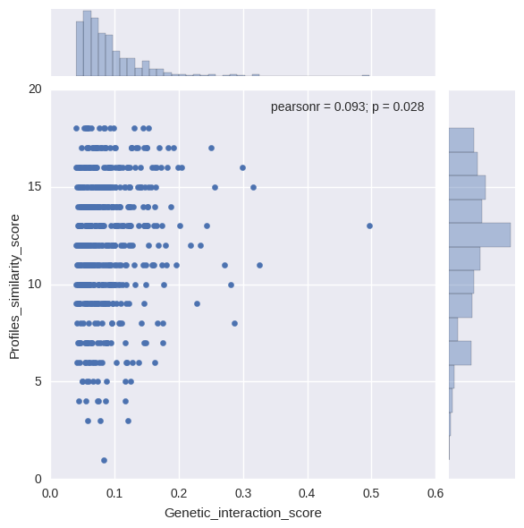
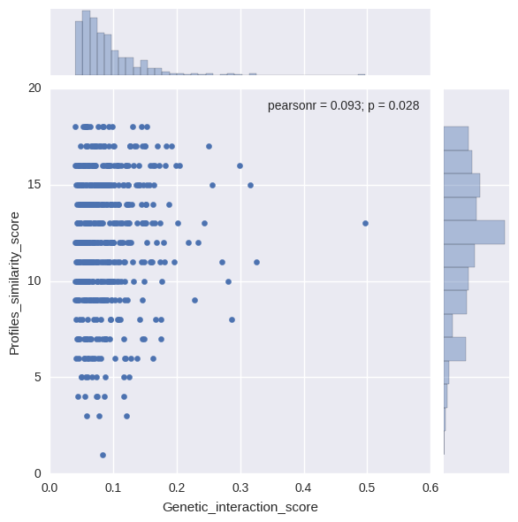

Definitions:
- DMF: Double Mutant Fitness
- SMF: Single Mutant Fitness
- DMF positive: DMF > SMF of query AND array
- DMF negative: DMF < SMF of query AND array
File created: 2016.9.19, 11:27:0
| Category | Actual value | |
|---|---|---|
| DMF positive | 556 | |
| DMF negative | 0 | Average of 1000 permutations |
| mirror profiles | 0 | 0 |
| similar profiles | 164 | 131 |
| dissimilar | 392 | 424 |
| total | 556 |

 


Click to show/hide columns:
Query_ORF Query_gene_name Array_ORF Array_gene_name Process_query Process_array Bioprocesses_similarity Query_gene_profile Array_gene_profile Profiles_similarity_score Query_SMF Array_SMF DMF Genetic_interaction_scoreClick to count selected rows:
| Query_ORF | Query_gene_name | Array_ORF | Array_gene_name | Process_query | Process_array | Bioprocesses_similarity | Query_gene_profile | Array_gene_profile | Profiles_similarity_score | Query_SMF | Array_SMF | DMF | Genetic_interaction_score |
|---|---|---|---|---|---|---|---|---|---|---|---|---|---|
| YCR077C | PAT1 | YCR008W | SAT4 | RNA processing | drug/ion transport;signaling/stress response | different | ---+-+-++--+------ | +-+++++++-++++++++ | 7.0 | 0.9307 | 0.9179 | 0.9412 | 0.0869 |
| YBL087C | RPL23A | YCR031C | RPS14A | ribosome/translation | ribosome/translation | identical | ++++++++++++++++-+ | ++++++++++++++++-+ | 18.0 | 0.8743 | 0.9487 | 0.9594 | 0.1300 |
| YBR164C | ARL1 | YDL226C | GCS1 | Golgi/endosome/vacuole/sorting | ER<->Golgi traffic | different | ---+-+-++-+++--+++ | ---+-+-++--++--+++ | 17.0 | 0.9524 | 0.9350 | 1.0364 | 0.1458 |
| YDL100C | GET3 | YDL226C | GCS1 | ER<->Golgi traffic | ER<->Golgi traffic | identical | -+-+-+-++-+++--+++ | ---+-+-++--++--+++ | 16.0 | 0.9747 | 0.9350 | 1.0324 | 0.1210 |
| YBL008W | HIR1 | YDL154W | MSH5 | chromatin/transcription | DNA replication/repair/HR/cohesion | different | ---+-+-++-++---+++ | ---+-+-+---+----++ | 15.0 | 0.9847 | 0.9465 | 1.0051 | 0.0730 |
| YBL047C | EDE1 | YDL119C | YDL119C | cell polarity/morphogenesis | unknown | different | ---+-++++-+++--+-+ | -----------+---+-- | 10.0 | 0.9425 | 0.9929 | 1.0290 | 0.0932 |
| YBR111W-A | SUS1 | YDL119C | YDL119C | nuclear-cytoplasic transport;chromatin/transcr... | unknown | different | ---+---++--+---+-+ | -----------+---+-- | 14.0 | 0.9154 | 0.9929 | 1.0056 | 0.0967 |
| YCR077C | PAT1 | YDR004W | RAD57 | RNA processing | DNA replication/repair/HR/cohesion | different | ---+-+-++--+------ | ++-+-+-++-+++-++++ | 10.0 | 0.9307 | 0.9032 | 0.9456 | 0.1050 |
| YBR210W | ERV15 | YDR006C | SOK1 | ER<->Golgi traffic | signaling/stress response | different | ---+-+-++--+-----+ | -----+--+--+----+- | 14.0 | 0.9787 | 0.9823 | 1.0237 | 0.0624 |
| YDL100C | GET3 | YDR502C | SAM2 | ER<->Golgi traffic | metabolism/mitochondria | different | -+-+-+-++-+++--+++ | --++++-+++++++-++- | 12.0 | 0.9747 | 0.9939 | 1.0217 | 0.0530 |
| YDL001W | RMD1 | YER052C | HOM3 | G1/S and G2/M cell cycle progression/meiosis | amino acid biosynth&transport/nitrogen utiliza... | different | ---+-++++--++---++ | +++++-+--+---++--+ | 5.0 | 0.9905 | 0.9692 | 1.0339 | 0.0739 |
| YBR210W | ERV15 | YFL003C | MSH4 | ER<->Golgi traffic | G1/S and G2/M cell cycle progression/meiosis | different | ---+-+-++--+-----+ | --++++++++++++-+++ | 9.0 | 0.9787 | 0.9803 | 1.0152 | 0.0557 |
| YBL047C | EDE1 | YGL210W | YPT32 | cell polarity/morphogenesis | cell polarity/morphogenesis | identical | ---+-++++-+++--+-+ | ---+-+-++-+++--+++ | 16.0 | 0.9425 | 0.9643 | 0.9690 | 0.0602 |
| YAL020C | ATS1 | YGL202W | ARO8 | ribosome/translation | amino acid biosynth&transport/nitrogen utiliza... | different | ---+-+-++--++--+++ | +++-+--+++-+-++--+ | 6.0 | 0.9596 | 0.9417 | 1.0216 | 0.1179 |
| YBR111W-A | SUS1 | YGL202W | ARO8 | nuclear-cytoplasic transport;chromatin/transcr... | amino acid biosynth&transport/nitrogen utiliza... | different | ---+---++--+---+-+ | +++-+--+++-+-++--+ | 9.0 | 0.9154 | 0.9417 | 0.9448 | 0.0828 |
| YCR077C | PAT1 | YGL202W | ARO8 | RNA processing | amino acid biosynth&transport/nitrogen utiliza... | different | ---+-+-++--+------ | +++-+--+++-+-++--+ | 8.0 | 0.9307 | 0.9417 | 1.0433 | 0.1669 |
| YCL016C | DCC1 | YGR133W | PEX4 | DNA replication/repair/HR/cohesion | NaN | different | ---+-+-++--+----++ | ---+-+-++-+++--+++ | 15.0 | 0.9483 | 0.9086 | 0.9484 | 0.0867 |
| YAL020C | ATS1 | YHR030C | SLT2 | ribosome/translation | protein folding/protein glycosylation/cell wal... | different | ---+-+-++--++--+++ | +-+++++++-++++++++ | 11.0 | 0.9596 | 0.9667 | 0.9957 | 0.0680 |
| YBL008W | HIR1 | YHR030C | SLT2 | chromatin/transcription | protein folding/protein glycosylation/cell wal... | different | ---+-+-++-++---+++ | +-+++++++-++++++++ | 11.0 | 0.9847 | 0.9667 | 1.0706 | 0.1186 |
| YBR105C | VID24 | YHR030C | SLT2 | metabolism/mitochondria | protein folding/protein glycosylation/cell wal... | different | ---+---+---+-----+ | +-+++++++-++++++++ | 6.0 | 0.9737 | 0.9667 | 1.0608 | 0.1195 |
| YCR077C | PAT1 | YHR030C | SLT2 | RNA processing | protein folding/protein glycosylation/cell wal... | different | ---+-+-++--+------ | +-+++++++-++++++++ | 7.0 | 0.9307 | 0.9667 | 0.9869 | 0.0873 |
| YDL088C | ASM4 | YHR030C | SLT2 | nuclear-cytoplasic transport | protein folding/protein glycosylation/cell wal... | different | ---+-+-++-++-----+ | +-+++++++-++++++++ | 9.0 | 0.9923 | 0.9667 | 1.0149 | 0.0556 |
| YCR077C | PAT1 | YHR200W | RPN10 | RNA processing | protein degradation/proteosome | different | ---+-+-++--+------ | ---+-+-++-+++--+++ | 13.0 | 0.9307 | 0.9326 | 0.9914 | 0.1235 |
| YBL039C | URA7 | YHR206W | SKN7 | metabolism/mitochondria | G1/S and G2/M cell cycle progression/meiosis;s... | different | ++++++++++++++++++ | ---+-+-++--+---+-+ | 7.0 | 0.9573 | 0.9618 | 0.9786 | 0.0578 |
| YBR210W | ERV15 | YHR206W | SKN7 | ER<->Golgi traffic | G1/S and G2/M cell cycle progression/meiosis;s... | different | ---+-+-++--+-----+ | ---+-+-++--+---+-+ | 17.0 | 0.9787 | 0.9618 | 0.9988 | 0.0574 |
| YDL001W | RMD1 | YHR206W | SKN7 | G1/S and G2/M cell cycle progression/meiosis | G1/S and G2/M cell cycle progression/meiosis;s... | different | ---+-++++--++---++ | ---+-+-++--+---+-+ | 14.0 | 0.9905 | 0.9618 | 1.0119 | 0.0592 |
| YCR066W | RAD18 | YIL036W | CST6 | DNA replication/repair/HR/cohesion | chromatin/transcription | different | -------+---+------ | -----+--+--+-----+ | 14.0 | 0.9520 | 0.9767 | 1.0100 | 0.0803 |
| YCL016C | DCC1 | YJL197W | UBP12 | DNA replication/repair/HR/cohesion | unknown | different | ---+-+-++--+----++ | ---+-+-++-+++--+++ | 15.0 | 0.9483 | 0.9940 | 1.0180 | 0.0753 |
| YBR034C | HMT1 | YJR048W | CYC1 | ribosome/translation;nuclear-cytoplasic transp... | metabolism/mitochondria | different | --++-+-+++-++--+++ | --++-+-++--++--+-- | 15.0 | 0.9610 | 0.9998 | 1.0065 | 0.0457 |
| YBR164C | ARL1 | YJR060W | CBF1 | Golgi/endosome/vacuole/sorting | unknown | different | ---+-+-++-+++--+++ | ---+-+--+--+------ | 12.0 | 0.9524 | 0.9710 | 1.0924 | 0.1676 |
| YBR210W | ERV15 | YJR060W | CBF1 | ER<->Golgi traffic | unknown | different | ---+-+-++--+-----+ | ---+-+--+--+------ | 16.0 | 0.9787 | 0.9710 | 0.9953 | 0.0450 |
| YCL029C | BIK1 | YJR060W | CBF1 | chromosome segregation/kinetochore/spindle/mic... | unknown | different | ---+-+-++-+++--+++ | ---+-+--+--+------ | 12.0 | 0.9750 | 0.9710 | 1.0140 | 0.0673 |
| YDL226C | GCS1 | YJR060W | CBF1 | ER<->Golgi traffic | unknown | different | ---+-+-++--++--+++ | ---+-+--+--+------ | 13.0 | 0.9350 | 0.9710 | 0.9885 | 0.0806 |
| YDL182W | LYS20 | YJR060W | CBF1 | amino acid biosynth&transport/nitrogen utiliza... | unknown | different | +--++----+---++--+ | ---+-+--+--+------ | 9.0 | 0.9375 | 0.9710 | 0.9835 | 0.0732 |
| YDL112W | TRM3 | YJR060W | CBF1 | ribosome/translation | unknown | different | ---+-+-++-+++--+++ | ---+-+--+--+------ | 12.0 | 0.9701 | 0.9710 | 0.9857 | 0.0437 |
| YBR016W | YBR016W | YKL190W | CNB1 | unknown | signaling/stress response | different | -------+---------- | ---+-+-++-+++--+++ | 9.0 | 0.9891 | 0.9839 | 1.0135 | 0.0404 |
| YDL112W | TRM3 | YKL148C | SDH1 | ribosome/translation | metabolism/mitochondria | different | ---+-+-++-+++--+++ | ++++++++++-+++++++ | 9.0 | 0.9701 | 0.9667 | 0.9804 | 0.0425 |
| YBR180W | DTR1 | YKL040C | NFU1 | drug/ion transport;G1/S and G2/M cell cycle pr... | metabolism/mitochondria | different | --+-+----+---+---- | --++++++++++++-+++ | 7.0 | 0.9835 | 0.9548 | 0.9848 | 0.0457 |
| YAR003W | SWD1 | YLR015W | BRE2 | chromatin/transcription | chromatin/transcription | identical | ---+-+-++--+-----+ | ---+-+-++-+++--+-+ | 15.0 | 0.8562 | 0.8220 | 0.8613 | 0.1574 |
| YBR082C | UBC4 | YLR089C | ALT1 | protein degradation/proteosome | unknown | different | ---+-+-++-+++--+++ | ---+-+-++-++---+++ | 17.0 | 0.8477 | 0.8218 | 0.8658 | 0.1691 |
| YCL016C | DCC1 | YLR113W | HOG1 | DNA replication/repair/HR/cohesion | protein folding/protein glycosylation/cell wal... | different | ---+-+-++--+----++ | +-+++++++-++++++++ | 9.0 | 0.9483 | 0.9960 | 1.0287 | 0.0842 |
| YDL215C | GDH2 | YLR113W | HOG1 | metabolism/mitochondria | protein folding/protein glycosylation/cell wal... | different | --+----+----+---+- | +-+++++++-++++++++ | 6.0 | 0.9977 | 0.9960 | 1.0496 | 0.0559 |
| YBR105C | VID24 | YML072C | TCB3 | metabolism/mitochondria | unknown | different | ---+---+---+-----+ | ---+-+--+--+----++ | 14.0 | 0.9737 | 0.9686 | 1.0095 | 0.0665 |
| YBR034C | HMT1 | YML041C | VPS71 | ribosome/translation;nuclear-cytoplasic transp... | chromatin/transcription | different | --++-+-+++-++--+++ | ---+-+-++--++--++- | 15.0 | 0.9610 | 0.9405 | 0.9727 | 0.0689 |
| YDL101C | DUN1 | YML041C | VPS71 | DNA replication/repair/HR/cohesion | chromatin/transcription | different | +-+++++++-++++++++ | ---+-+-++--++--++- | 10.0 | 0.9350 | 0.9405 | 0.9660 | 0.0866 |
| YCR066W | RAD18 | YML038C | YMD8 | DNA replication/repair/HR/cohesion | drug/ion transport | different | -------+---+------ | ---+-+-++--++---++ | 12.0 | 0.9520 | 0.9639 | 1.0455 | 0.1279 |
| YDL001W | RMD1 | YML038C | YMD8 | G1/S and G2/M cell cycle progression/meiosis | drug/ion transport | different | ---+-++++--++---++ | ---+-+-++--++---++ | 17.0 | 0.9905 | 0.9639 | 1.0275 | 0.0727 |
| YDL215C | GDH2 | YNR002C | ATO2 | metabolism/mitochondria | drug/ion transport;amino acid biosynth&transpo... | different | --+----+----+---+- | +--------+----+-++ | 11.0 | 0.9977 | 0.9778 | 1.0360 | 0.0604 |
| YDL088C | ASM4 | YNR002C | ATO2 | nuclear-cytoplasic transport | drug/ion transport;amino acid biosynth&transpo... | different | ---+-+-++-++-----+ | +--------+----+-++ | 8.0 | 0.9923 | 0.9778 | 1.0209 | 0.0506 |
| YDL088C | ASM4 | YOL049W | GSH2 | nuclear-cytoplasic transport | metabolism/mitochondria | different | ---+-+-++-++-----+ | ---+-+-++-+++--+++ | 15.0 | 0.9923 | 0.9252 | 1.0012 | 0.0832 |
| YDL001W | RMD1 | YOL049W | GSH2 | G1/S and G2/M cell cycle progression/meiosis | metabolism/mitochondria | different | ---+-++++--++---++ | ---+-+-++-+++--+++ | 15.0 | 0.9905 | 0.9252 | 0.9943 | 0.0779 |
| YBL007C | SLA1 | YOR070C | GYP1 | cell polarity/morphogenesis | Golgi/endosome/vacuole/sorting | different | -----+-++--+---++- | ---+-+-++--++--+++ | 15.0 | 0.7861 | 0.8767 | 0.9457 | 0.2565 |
| YDL100C | GET3 | YOR085W | OST3 | ER<->Golgi traffic | protein folding/protein glycosylation/cell wal... | different | -+-+-+-++-+++--+++ | ---+-+-++--+---+-+ | 14.0 | 0.9747 | 0.9013 | 0.9871 | 0.1087 |
| YBR112C | CYC8 | YOR123C | LEO1 | chromatin/transcription | chromatin/transcription | identical | -----+-++--+---+-- | ---+-+-++--+---+++ | 15.0 | 0.9560 | 0.9252 | 0.9694 | 0.0849 |
| YBR210W | ERV15 | YOR123C | LEO1 | ER<->Golgi traffic | chromatin/transcription | different | ---+-+-++--+-----+ | ---+-+-++--+---+++ | 16.0 | 0.9787 | 0.9252 | 0.9890 | 0.0835 |
| YDL001W | RMD1 | YOR123C | LEO1 | G1/S and G2/M cell cycle progression/meiosis | chromatin/transcription | different | ---+-++++--++---++ | ---+-+-++--+---+++ | 15.0 | 0.9905 | 0.9252 | 1.0641 | 0.1477 |
| YCR066W | RAD18 | YOR283W | YOR283W | DNA replication/repair/HR/cohesion | unknown | different | -------+---+------ | +-+++-++++-+++++-+ | 6.0 | 0.9520 | 0.9855 | 1.0191 | 0.0809 |
| YAR003W | SWD1 | YOR327C | SNC2 | chromatin/transcription | Golgi/endosome/vacuole/sorting | different | ---+-+-++--+-----+ | ---+-+-++--++--+++ | 15.0 | 0.8562 | 0.9932 | 1.1665 | 0.3161 |
| YDL112W | TRM3 | YOR351C | MEK1 | ribosome/translation | G1/S and G2/M cell cycle progression/meiosis;D... | different | ---+-+-++-+++--+++ | +-+++++++-++++++++ | 12.0 | 0.9701 | 0.9852 | 0.9963 | 0.0406 |
| YBL008W | HIR1 | YPL259C | APM1 | chromatin/transcription | cell polarity/morphogenesis | different | ---+-+-++-++---+++ | ---+-+-++-+++--+++ | 17.0 | 0.9847 | 0.9758 | 1.0199 | 0.0590 |
| YBR164C | ARL1 | YPL259C | APM1 | Golgi/endosome/vacuole/sorting | cell polarity/morphogenesis | different | ---+-+-++-+++--+++ | ---+-+-++-+++--+++ | 18.0 | 0.9524 | 0.9758 | 0.9936 | 0.0642 |
| YDL181W | INH1 | YPL244C | HUT1 | drug/ion transport | unknown | different | -----+--+--+------ | ---+-+-++-+++--+++ | 11.0 | 0.9720 | 0.9963 | 1.0124 | 0.0439 |
| YDL226C | GCS1 | YPL051W | ARL3 | ER<->Golgi traffic | Golgi/endosome/vacuole/sorting | different | ---+-+-++--++--+++ | ---+-+-++-+++--+++ | 17.0 | 0.9350 | 0.9922 | 1.1784 | 0.2507 |
| YAL020C | ATS1 | YPR051W | MAK3 | ribosome/translation | unknown | different | ---+-+-++--++--+++ | ++-+++-+++++++++++ | 11.0 | 0.9596 | 0.9891 | 0.9908 | 0.0416 |
| YCR091W | KIN82 | YPR051W | MAK3 | signaling/stress response;chromatin/transcription | unknown | different | +-+++++++-++++++++ | ++-+++-+++++++++++ | 14.0 | 0.9832 | 0.9891 | 1.0369 | 0.0645 |
| YBR105C | VID24 | YCL025C | AGP1 | metabolism/mitochondria | amino acid biosynth&transport/nitrogen utiliza... | different | ---+---+---+-----+ | --+-+----+---+---- | 10.0 | 0.9737 | 0.9498 | 0.9923 | 0.0675 |
| YBR164C | ARL1 | YDR076W | RAD55 | Golgi/endosome/vacuole/sorting | DNA replication/repair/HR/cohesion | different | ---+-+-++-+++--+++ | +++-----------+--- | 4.0 | 0.9524 | 0.9015 | 0.9750 | 0.1165 |
| YCR077C | PAT1 | YDR076W | RAD55 | RNA processing | DNA replication/repair/HR/cohesion | different | ---+-+-++--+------ | +++-----------+--- | 9.0 | 0.9307 | 0.9015 | 0.9562 | 0.1173 |
| YBR019C | GAL10 | YER048C | CAJ1 | metabolism/mitochondria | unknown | different | --++++-+++-+-+-+++ | ---+---+----+---++ | 9.0 | 0.9938 | 0.9899 | 1.0733 | 0.0895 |
| YBL039C | URA7 | YGL209W | MIG2 | metabolism/mitochondria | metabolism/mitochondria;chromatin/transcription | different | ++++++++++++++++++ | +--+-+-++-+++--+++ | 11.0 | 0.9573 | 0.9830 | 0.9851 | 0.0441 |
| YBL008W | HIR1 | YGL087C | MMS2 | chromatin/transcription | DNA replication/repair/HR/cohesion | different | ---+-+-++-++---+++ | ---+-+-++--++--+++ | 16.0 | 0.9847 | 0.9975 | 1.0946 | 0.1123 |
| YBR164C | ARL1 | YGR054W | YGR054W | Golgi/endosome/vacuole/sorting | ribosome/translation | different | ---+-+-++-+++--+++ | ---+-+-++-+++--+++ | 18.0 | 0.9524 | 0.9794 | 0.9852 | 0.0525 |
| YBL047C | EDE1 | YHR004C | NEM1 | cell polarity/morphogenesis | G1/S and G2/M cell cycle progression/meiosis;l... | different | ---+-++++-+++--+-+ | ---+-+-++-+++--+++ | 16.0 | 0.9425 | 0.9408 | 0.9945 | 0.1078 |
| YBL039C | URA7 | YHR004C | NEM1 | metabolism/mitochondria | G1/S and G2/M cell cycle progression/meiosis;l... | different | ++++++++++++++++++ | ---+-+-++-+++--+++ | 10.0 | 0.9573 | 0.9408 | 0.9580 | 0.0573 |
| YBR105C | VID24 | YHR004C | NEM1 | metabolism/mitochondria | G1/S and G2/M cell cycle progression/meiosis;l... | different | ---+---+---+-----+ | ---+-+-++-+++--+++ | 12.0 | 0.9737 | 0.9408 | 0.9850 | 0.0690 |
| YDL117W | CYK3 | YHR004C | NEM1 | cell polarity/morphogenesis | G1/S and G2/M cell cycle progression/meiosis;l... | different | -----+-++-++------ | ---+-+-++-+++--+++ | 13.0 | 0.8683 | 0.9408 | 0.9549 | 0.1379 |
| YCL016C | DCC1 | YHR108W | GGA2 | DNA replication/repair/HR/cohesion | Golgi/endosome/vacuole/sorting | different | ---+-+-++--+----++ | ---+-+-++--+---++- | 16.0 | 0.9483 | 0.9094 | 0.9486 | 0.0863 |
| YBL008W | HIR1 | YJL095W | BCK1 | chromatin/transcription | protein folding/protein glycosylation/cell wal... | different | ---+-+-++-++---+++ | +-+++++++-++++++++ | 11.0 | 0.9847 | 0.9848 | 1.1190 | 0.1492 |
| YCR077C | PAT1 | YJL095W | BCK1 | RNA processing | protein folding/protein glycosylation/cell wal... | different | ---+-+-++--+------ | +-+++++++-++++++++ | 7.0 | 0.9307 | 0.9848 | 1.0104 | 0.0939 |
| YDL101C | DUN1 | YJL095W | BCK1 | DNA replication/repair/HR/cohesion | protein folding/protein glycosylation/cell wal... | different | +-+++++++-++++++++ | +-+++++++-++++++++ | 18.0 | 0.9350 | 0.9848 | 1.0187 | 0.0979 |
| YBL047C | EDE1 | YJL068C | YJL068C | cell polarity/morphogenesis | metabolism/mitochondria | different | ---+-++++-+++--+-+ | ++++-+-+++-+-+++-+ | 9.0 | 0.9425 | 0.9961 | 1.0075 | 0.0686 |
| YBL078C | ATG8 | YJL036W | SNX4 | ER<->Golgi traffic | Golgi/endosome/vacuole/sorting | different | ---+-+-++--++--+-+ | -----+-++--++--+-+ | 17.0 | 0.8836 | 0.8971 | 0.9432 | 0.1505 |
| YBR105C | VID24 | YJL036W | SNX4 | metabolism/mitochondria | Golgi/endosome/vacuole/sorting | different | ---+---+---+-----+ | -----+-++--++--+-+ | 13.0 | 0.9737 | 0.8971 | 0.9826 | 0.1091 |
| YBR111W-A | SUS1 | YJL036W | SNX4 | nuclear-cytoplasic transport;chromatin/transcr... | Golgi/endosome/vacuole/sorting | different | ---+---++--+---+-+ | -----+-++--++--+-+ | 15.0 | 0.9154 | 0.8971 | 0.9852 | 0.1640 |
| YDL137W | ARF2 | YJL036W | SNX4 | Golgi/endosome/vacuole/sorting | Golgi/endosome/vacuole/sorting | identical | ---+-+-++-+++--+++ | -----+-++--++--+-+ | 15.0 | 0.9790 | 0.8971 | 0.9998 | 0.1216 |
| YDL088C | ASM4 | YJL036W | SNX4 | nuclear-cytoplasic transport | Golgi/endosome/vacuole/sorting | different | ---+-+-++-++-----+ | -----+-++--++--+-+ | 14.0 | 0.9923 | 0.8971 | 1.0418 | 0.1516 |
| YBL047C | EDE1 | YJL004C | SYS1 | cell polarity/morphogenesis | Golgi/endosome/vacuole/sorting | different | ---+-++++-+++--+-+ | ---+-+-++--+---+++ | 14.0 | 0.9425 | 0.9637 | 0.9736 | 0.0654 |
| YBR164C | ARL1 | YJL004C | SYS1 | Golgi/endosome/vacuole/sorting | Golgi/endosome/vacuole/sorting | identical | ---+-+-++-+++--+++ | ---+-+-++--+---+++ | 16.0 | 0.9524 | 0.9637 | 1.0829 | 0.1651 |
| YCR091W | KIN82 | YJL004C | SYS1 | signaling/stress response;chromatin/transcription | Golgi/endosome/vacuole/sorting | different | +-+++++++-++++++++ | ---+-+-++--+---+++ | 10.0 | 0.9832 | 0.9637 | 1.0083 | 0.0609 |
| YDL226C | GCS1 | YJL004C | SYS1 | ER<->Golgi traffic | Golgi/endosome/vacuole/sorting | different | ---+-+-++--++--+++ | ---+-+-++--+---+++ | 17.0 | 0.9350 | 0.9637 | 1.0338 | 0.1327 |
| YAL020C | ATS1 | YKL160W | ELF1 | ribosome/translation | chromatin/transcription | different | ---+-+-++--++--+++ | ---+-+-++-+++--+-+ | 16.0 | 0.9596 | 0.9571 | 0.9653 | 0.0468 |
| YBL037W | APL3 | YKL160W | ELF1 | cell polarity/morphogenesis | chromatin/transcription | different | ---+-+-++-+++--+++ | ---+-+-++-+++--+-+ | 17.0 | 0.9848 | 0.9571 | 0.9907 | 0.0482 |
| YBR034C | HMT1 | YKL010C | UFD4 | ribosome/translation;nuclear-cytoplasic transp... | unknown | different | --++-+-+++-++--+++ | ---+-+-++--++--+++ | 16.0 | 0.9610 | 0.9912 | 0.9930 | 0.0405 |
| YBR164C | ARL1 | YKR023W | YKR023W | Golgi/endosome/vacuole/sorting | unknown | different | ---+-+-++-+++--+++ | ---+-+-++-+++--+++ | 18.0 | 0.9524 | 0.9959 | 1.0074 | 0.0590 |
| YBR034C | HMT1 | YLL043W | FPS1 | ribosome/translation;nuclear-cytoplasic transp... | drug/ion transport | different | --++-+-+++-++--+++ | --++++-+++-++++-++ | 14.0 | 0.9610 | 0.9236 | 0.9755 | 0.0879 |
| YCL016C | DCC1 | YLL043W | FPS1 | DNA replication/repair/HR/cohesion | drug/ion transport | different | ---+-+-++--+----++ | --++++-+++-++++-++ | 12.0 | 0.9483 | 0.9236 | 0.9759 | 0.1000 |
| YCR066W | RAD18 | YLR372W | SUR4 | DNA replication/repair/HR/cohesion | lipid/sterol/fatty acid biosynth | different | -------+---+------ | -----+-++--++---+- | 14.0 | 0.9520 | 0.9128 | 0.9584 | 0.0895 |
| YDL215C | GDH2 | YLR372W | SUR4 | metabolism/mitochondria | lipid/sterol/fatty acid biosynth | different | --+----+----+---+- | -----+-++--++---+- | 14.0 | 0.9977 | 0.9128 | 1.0004 | 0.0898 |
| YBL008W | HIR1 | YMR009W | ADI1 | chromatin/transcription | metabolism/mitochondria | different | ---+-+-++-++---+++ | ---+++-++--+---+++ | 16.0 | 0.9847 | 0.9905 | 1.0196 | 0.0443 |
| YCR066W | RAD18 | YMR037C | MSN2 | DNA replication/repair/HR/cohesion | signaling/stress response | different | -------+---+------ | +--+-+-++-+++--+++ | 9.0 | 0.9520 | 0.9986 | 1.0138 | 0.0631 |
| YDL215C | GDH2 | YMR039C | SUB1 | metabolism/mitochondria | chromatin/transcription | different | --+----+----+---+- | ---+-+-++--+---+-+ | 9.0 | 0.9977 | 0.9435 | 1.0385 | 0.0973 |
| YCR077C | PAT1 | YMR100W | MUB1 | RNA processing | unknown | different | ---+-+-++--+------ | -----+-++--++--+-+ | 14.0 | 0.9307 | 0.9387 | 0.9699 | 0.0963 |
| YDL215C | GDH2 | YMR100W | MUB1 | metabolism/mitochondria | unknown | different | --+----+----+---+- | -----+-++--++--+-+ | 11.0 | 0.9977 | 0.9387 | 1.0364 | 0.0999 |
| YDL100C | GET3 | YNL085W | MKT1 | ER<->Golgi traffic | DNA replication/repair/HR/cohesion | different | -+-+-+-++-+++--+++ | -------+----+---+- | 10.0 | 0.9747 | 0.9806 | 1.1048 | 0.1490 |
| YBL008W | HIR1 | YOR308C | SNU66 | chromatin/transcription | RNA processing | different | ---+-+-++-++---+++ | ---+-+-++--++--+-+ | 15.0 | 0.9847 | 0.9714 | 1.0035 | 0.0470 |
| YBR034C | HMT1 | YOR308C | SNU66 | ribosome/translation;nuclear-cytoplasic transp... | RNA processing | different | --++-+-+++-++--+++ | ---+-+-++--++--+-+ | 15.0 | 0.9610 | 0.9714 | 0.9968 | 0.0633 |
| YBR164C | ARL1 | YOR308C | SNU66 | Golgi/endosome/vacuole/sorting | RNA processing | different | ---+-+-++-+++--+++ | ---+-+-++--++--+-+ | 16.0 | 0.9524 | 0.9714 | 0.9962 | 0.0710 |
| YAR003W | SWD1 | YPL270W | MDL2 | chromatin/transcription | drug/ion transport;metabolism/mitochondria | different | ---+-+-++--+-----+ | +-++++++++++++++++ | 7.0 | 0.8562 | 0.8653 | 0.9152 | 0.1744 |
| YBR111W-A | SUS1 | YPL138C | SPP1 | nuclear-cytoplasic transport;chromatin/transcr... | chromatin/transcription | different | ---+---++--+---+-+ | -----+-++--+---+-- | 15.0 | 0.9154 | 0.9922 | 1.0319 | 0.1236 |
| YBR105C | VID24 | YPL098C | MGR2 | metabolism/mitochondria | unknown | different | ---+---+---+-----+ | -----+-++--++--+-- | 12.0 | 0.9737 | 0.9233 | 0.9796 | 0.0806 |
| YBR111W-A | SUS1 | YPL098C | MGR2 | nuclear-cytoplasic transport;chromatin/transcr... | unknown | different | ---+---++--+---+-+ | -----+-++--++--+-- | 14.0 | 0.9154 | 0.9233 | 0.9661 | 0.1209 |
| YDL226C | GCS1 | YBL017C | PEP1 | ER<->Golgi traffic | Golgi/endosome/vacuole/sorting | different | ---+-+-++--++--+++ | -------+---++--+-+ | 14.0 | 0.9350 | 0.9448 | 1.0282 | 0.1448 |
| YDL215C | GDH2 | YBL017C | PEP1 | metabolism/mitochondria | Golgi/endosome/vacuole/sorting | different | --+----+----+---+- | -------+---++--+-+ | 13.0 | 0.9977 | 0.9448 | 1.0374 | 0.0948 |
| YDL181W | INH1 | YBR094W | PBY1 | drug/ion transport | unknown | different | -----+--+--+------ | -----+-++-+++--+++ | 12.0 | 0.9720 | 0.9432 | 0.9728 | 0.0560 |
| YAL020C | ATS1 | YDL100C | GET3 | ribosome/translation | ER<->Golgi traffic | different | ---+-+-++--++--+++ | -+-+-+-++-+++--+++ | 16.0 | 0.9596 | 0.9747 | 0.9803 | 0.0449 |
| YBL039C | URA7 | YDL100C | GET3 | metabolism/mitochondria | ER<->Golgi traffic | different | ++++++++++++++++++ | -+-+-+-++-+++--+++ | 11.0 | 0.9573 | 0.9747 | 1.0099 | 0.0768 |
| YBR112C | CYC8 | YDR126W | SWF1 | chromatin/transcription | Golgi/endosome/vacuole/sorting | different | -----+-++--+---+-- | ---+-+-++-+++--+++ | 13.0 | 0.9560 | 0.8851 | 0.9926 | 0.1463 |
| YDL181W | INH1 | YDR148C | KGD2 | drug/ion transport | metabolism/mitochondria | different | -----+--+--+------ | --++++++++-+++-+++ | 7.0 | 0.9720 | 0.9689 | 0.9988 | 0.0570 |
| YBR105C | VID24 | YDR206W | EBS1 | metabolism/mitochondria | ribosome/translation;RNA processing | different | ---+---+---+-----+ | ---+-+--+--+-----+ | 15.0 | 0.9737 | 0.9935 | 1.0471 | 0.0797 |
| YBR009C | HHF1 | YDR225W | HTA1 | chromosome segregation/kinetochore/spindle/mic... | chromatin/transcription | different | ---+-+-++-+++--+-+ | ---+-+-++-+++--+-+ | 18.0 | 0.9223 | 0.9014 | 0.9760 | 0.1446 |
| YBR010W | HHT1 | YDR225W | HTA1 | chromatin/transcription | chromatin/transcription | identical | ---+-+-++-+++--+-+ | ---+-+-++-+++--+-+ | 18.0 | 0.9655 | 0.9014 | 1.0236 | 0.1533 |
| YCR077C | PAT1 | YDR225W | HTA1 | RNA processing | chromatin/transcription | different | ---+-+-++--+------ | ---+-+-++-+++--+-+ | 14.0 | 0.9307 | 0.9014 | 1.0259 | 0.1870 |
| YBL087C | RPL23A | YER131W | RPS26B | ribosome/translation | ribosome/translation | identical | ++++++++++++++++-+ | ++-+-+-++-+++-+--+ | 12.0 | 0.8743 | 0.8847 | 0.8889 | 0.1155 |
| YBL008W | HIR1 | YGL104C | VPS73 | chromatin/transcription | Golgi/endosome/vacuole/sorting | different | ---+-+-++-++---+++ | +--+++-++++++-++++ | 13.0 | 0.9847 | 0.9845 | 1.0133 | 0.0438 |
| YBR105C | VID24 | YGL080W | FMP37 | metabolism/mitochondria | unknown | different | ---+---+---+-----+ | ---+-+-++--++--+-+ | 14.0 | 0.9737 | 0.9843 | 1.0648 | 0.1064 |
| YBL087C | RPL23A | YGR034W | RPL26B | ribosome/translation | ribosome/translation | identical | ++++++++++++++++-+ | ++-+-+-++-+++-++-+ | 13.0 | 0.8743 | 0.8773 | 0.9172 | 0.1503 |
| YBR105C | VID24 | YGR042W | YGR042W | metabolism/mitochondria | unknown | different | ---+---+---+-----+ | ---+-------+------ | 16.0 | 0.9737 | 0.9927 | 1.0171 | 0.0506 |
| YBL008W | HIR1 | YGR187C | HGH1 | chromatin/transcription | ribosome/translation | different | ---+-+-++-++---+++ | ---+-+-++--++--+-+ | 15.0 | 0.9847 | 0.9780 | 1.0444 | 0.0814 |
| YBR111W-A | SUS1 | YGR187C | HGH1 | nuclear-cytoplasic transport;chromatin/transcr... | ribosome/translation | different | ---+---++--+---+-+ | ---+-+-++--++--+-+ | 16.0 | 0.9154 | 0.9780 | 1.0149 | 0.1196 |
| YCR077C | PAT1 | YHR034C | PIH1 | RNA processing | ribosome/translation | different | ---+-+-++--+------ | -----+-++--++--+++ | 13.0 | 0.9307 | 0.8736 | 0.9789 | 0.1659 |
| YBL008W | HIR1 | YHR135C | YCK1 | chromatin/transcription | cell polarity/morphogenesis | different | ---+-+-++-++---+++ | +-+++++++-++++++++ | 11.0 | 0.9847 | 0.9976 | 1.0846 | 0.1023 |
| YDL215C | GDH2 | YHR135C | YCK1 | metabolism/mitochondria | cell polarity/morphogenesis | different | --+----+----+---+- | +-+++++++-++++++++ | 6.0 | 0.9977 | 0.9976 | 1.0488 | 0.0535 |
| YBR019C | GAL10 | YIL112W | HOS4 | metabolism/mitochondria | chromatin/transcription | different | --++++-+++-+-+-+++ | +-++-+-++++++--+++ | 13.0 | 0.9938 | 0.9535 | 1.0099 | 0.0623 |
| YBR111W-A | SUS1 | YIL112W | HOS4 | nuclear-cytoplasic transport;chromatin/transcr... | chromatin/transcription | different | ---+---++--+---+-+ | +-++-+-++++++--+++ | 11.0 | 0.9154 | 0.9535 | 0.9564 | 0.0835 |
| YBR164C | ARL1 | YJL128C | PBS2 | Golgi/endosome/vacuole/sorting | protein folding/protein glycosylation/cell wal... | different | ---+-+-++-+++--+++ | +-+++++++-++++++++ | 12.0 | 0.9524 | 0.9783 | 1.0183 | 0.0865 |
| YDR004W | RAD57 | YJL128C | PBS2 | DNA replication/repair/HR/cohesion | protein folding/protein glycosylation/cell wal... | different | ++-+-+-++-+++-++++ | +-+++++++-++++++++ | 13.0 | 0.9032 | 0.9783 | 1.0090 | 0.1254 |
| YBR164C | ARL1 | YJR040W | GEF1 | Golgi/endosome/vacuole/sorting | drug/ion transport | different | ---+-+-++-+++--+++ | -+++-+-+++-+----++ | 12.0 | 0.9524 | 0.9668 | 0.9851 | 0.0643 |
| YBR210W | ERV15 | YJR040W | GEF1 | ER<->Golgi traffic | drug/ion transport | different | ---+-+-++--+-----+ | -+++-+-+++-+----++ | 14.0 | 0.9787 | 0.9668 | 1.0081 | 0.0619 |
| YDL181W | INH1 | YJR040W | GEF1 | drug/ion transport | drug/ion transport | identical | -----+--+--+------ | -+++-+-+++-+----++ | 11.0 | 0.9720 | 0.9668 | 0.9932 | 0.0534 |
| YDL112W | TRM3 | YJR040W | GEF1 | ribosome/translation | drug/ion transport | different | ---+-+-++-+++--+++ | -+++-+-+++-+----++ | 12.0 | 0.9701 | 0.9668 | 0.9948 | 0.0569 |
| YDL100C | GET3 | YJR040W | GEF1 | ER<->Golgi traffic | drug/ion transport | different | -+-+-+-++-+++--+++ | -+++-+-+++-+----++ | 13.0 | 0.9747 | 0.9668 | 1.0010 | 0.0587 |
| YBR210W | ERV15 | YJR069C | HAM1 | ER<->Golgi traffic | DNA replication/repair/HR/cohesion | different | ---+-+-++--+-----+ | ++++++++++++++++-+ | 7.0 | 0.9787 | 0.9797 | 1.0213 | 0.0624 |
| YDL100C | GET3 | YJR069C | HAM1 | ER<->Golgi traffic | DNA replication/repair/HR/cohesion | different | -+-+-+-++-+++--+++ | ++++++++++++++++-+ | 10.0 | 0.9747 | 0.9797 | 1.0482 | 0.0934 |
| YBR210W | ERV15 | YKR051W | YKR051W | ER<->Golgi traffic | unknown | different | ---+-+-++--+-----+ | ---+-+-++--+---+++ | 16.0 | 0.9787 | 0.9300 | 1.0006 | 0.0904 |
| YBR010W | HHT1 | YKR060W | UTP30 | chromatin/transcription | ribosome/translation;RNA processing | different | ---+-+-++-+++--+-+ | ---+-+-++-++---+++ | 16.0 | 0.9655 | 0.9938 | 1.0138 | 0.0543 |
| YCL016C | DCC1 | YKR060W | UTP30 | DNA replication/repair/HR/cohesion | ribosome/translation;RNA processing | different | ---+-+-++--+----++ | ---+-+-++-++---+++ | 16.0 | 0.9483 | 0.9938 | 1.0117 | 0.0692 |
| YBL008W | HIR1 | YLL001W | DNM1 | chromatin/transcription | chromosome segregation/kinetochore/spindle/mic... | different | ---+-+-++-++---+++ | ---+-+-++-+++--+++ | 17.0 | 0.9847 | 0.9811 | 1.0922 | 0.1261 |
| YCR091W | KIN82 | YLL001W | DNM1 | signaling/stress response;chromatin/transcription | chromosome segregation/kinetochore/spindle/mic... | different | +-+++++++-++++++++ | ---+-+-++-+++--+++ | 12.0 | 0.9832 | 0.9811 | 1.0338 | 0.0692 |
| YDL001W | RMD1 | YLL001W | DNM1 | G1/S and G2/M cell cycle progression/meiosis | chromosome segregation/kinetochore/spindle/mic... | different | ---+-++++--++---++ | ---+-+-++-+++--+++ | 15.0 | 0.9905 | 0.9811 | 1.0502 | 0.0784 |
| YCL016C | DCC1 | YML034W | SRC1 | DNA replication/repair/HR/cohesion | unknown | different | ---+-+-++--+----++ | -----+-----+------ | 13.0 | 0.9483 | 0.9952 | 1.0434 | 0.0996 |
| YDL117W | CYK3 | YML034W | SRC1 | cell polarity/morphogenesis | unknown | different | -----+-++-++------ | -----+-----+------ | 15.0 | 0.8683 | 0.9952 | 0.9997 | 0.1356 |
| YAR003W | SWD1 | YNL147W | LSM7 | chromatin/transcription | RNA processing | different | ---+-+-++--+-----+ | ++-+-+-++-+++-++-+ | 12.0 | 0.8562 | 0.8539 | 0.8836 | 0.1525 |
| YCR077C | PAT1 | YNL147W | LSM7 | RNA processing | RNA processing | identical | ---+-+-++--+------ | ++-+-+-++-+++-++-+ | 11.0 | 0.9307 | 0.8539 | 0.9750 | 0.1804 |
| YBR180W | DTR1 | YNL041C | COG6 | drug/ion transport;G1/S and G2/M cell cycle pr... | Golgi/endosome/vacuole/sorting | different | --+-+----+---+---- | ---+-+-++--+----++ | 7.0 | 0.9835 | 0.9618 | 1.0043 | 0.0584 |
| YDL112W | TRM3 | YNL041C | COG6 | ribosome/translation | Golgi/endosome/vacuole/sorting | different | ---+-+-++-+++--+++ | ---+-+-++--+----++ | 15.0 | 0.9701 | 0.9618 | 1.0232 | 0.0901 |
| YDR004W | RAD57 | YNL001W | DOM34 | DNA replication/repair/HR/cohesion | RNA processing | different | ++-+-+-++-+++-++++ | ++-+-+-++-+++-++++ | 18.0 | 0.9032 | 0.9003 | 0.9060 | 0.0928 |
| YBL037W | APL3 | YOR054C | VHS3 | cell polarity/morphogenesis | G1/S and G2/M cell cycle progression/meiosis;s... | different | ---+-+-++-+++--+++ | ++++++-+++-+++++++ | 10.0 | 0.9848 | 0.9505 | 1.0013 | 0.0652 |
| YBR180W | DTR1 | YOR061W | CKA2 | drug/ion transport;G1/S and G2/M cell cycle pr... | signaling/stress response | different | --+-+----+---+---- | ---+-+-++-+++--+++ | 4.0 | 0.9835 | 0.9850 | 1.0245 | 0.0558 |
| YDL100C | GET3 | YOR061W | CKA2 | ER<->Golgi traffic | signaling/stress response | different | -+-+-+-++-+++--+++ | ---+-+-++-+++--+++ | 17.0 | 0.9747 | 0.9850 | 1.0258 | 0.0657 |
| YDL088C | ASM4 | YOR061W | CKA2 | nuclear-cytoplasic transport | signaling/stress response | different | ---+-+-++-++-----+ | ---+-+-++-+++--+++ | 15.0 | 0.9923 | 0.9850 | 1.0485 | 0.0711 |
| YDL100C | GET3 | YOR265W | RBL2 | ER<->Golgi traffic | chromosome segregation/kinetochore/spindle/mic... | different | -+-+-+-++-+++--+++ | ---+-+-++-+++--+-+ | 16.0 | 0.9747 | 0.9841 | 1.0155 | 0.0563 |
| YBR180W | DTR1 | YPL264C | YPL264C | drug/ion transport;G1/S and G2/M cell cycle pr... | unknown | different | --+-+----+---+---- | -+++---++--+-+-+-+ | 9.0 | 0.9835 | 0.9913 | 1.0181 | 0.0432 |
| YDL181W | INH1 | YPL264C | YPL264C | drug/ion transport | unknown | different | -----+--+--+------ | -+++---++--+-+-+-+ | 10.0 | 0.9720 | 0.9913 | 1.0439 | 0.0804 |
| YDL215C | GDH2 | YPL249C | GYP5 | metabolism/mitochondria | ER<->Golgi traffic | different | --+----+----+---+- | ---+-+-++-+++--+++ | 10.0 | 0.9977 | 0.9807 | 1.0186 | 0.0402 |
| YCL016C | DCC1 | YPL150W | YPL150W | DNA replication/repair/HR/cohesion | unknown | different | ---+-+-++--+----++ | +-+++++++-++++++++ | 9.0 | 0.9483 | 0.9827 | 1.0090 | 0.0771 |
| YDL112W | TRM3 | YPL150W | YPL150W | ribosome/translation | unknown | different | ---+-+-++-+++--+++ | +-+++++++-++++++++ | 12.0 | 0.9701 | 0.9827 | 0.9969 | 0.0436 |
| YCR066W | RAD18 | YPL120W | VPS30 | DNA replication/repair/HR/cohesion | Golgi/endosome/vacuole/sorting | different | -------+---+------ | ---+-+-++--+---+++ | 12.0 | 0.9520 | 0.9152 | 0.9579 | 0.0867 |
| YBR210W | ERV15 | YPL048W | CAM1 | ER<->Golgi traffic | signaling/stress response;chromatin/transcription | different | ---+-+-++--+-----+ | ---+-+-++-+++--++- | 13.0 | 0.9787 | 0.9984 | 1.0537 | 0.0766 |
| YDL001W | RMD1 | YPL048W | CAM1 | G1/S and G2/M cell cycle progression/meiosis | signaling/stress response;chromatin/transcription | different | ---+-++++--++---++ | ---+-+-++-+++--++- | 14.0 | 0.9905 | 0.9984 | 1.0574 | 0.0685 |
| YBR111W-A | SUS1 | YPL047W | SGF11 | nuclear-cytoplasic transport;chromatin/transcr... | chromatin/transcription | different | ---+---++--+---+-+ | ---+---++--+------ | 16.0 | 0.9154 | 0.8580 | 0.9483 | 0.1629 |
| YDL182W | LYS20 | YPL008W | CHL1 | amino acid biosynth&transport/nitrogen utiliza... | DNA replication/repair/HR/cohesion | different | +--++----+---++--+ | ++-+-+-++++++-++++ | 7.0 | 0.9375 | 0.9832 | 1.0091 | 0.0873 |
| YBL047C | EDE1 | YPR060C | ARO7 | cell polarity/morphogenesis | amino acid biosynth&transport/nitrogen utiliza... | different | ---+-++++-+++--+-+ | ---+-------------+ | 10.0 | 0.9425 | 0.9048 | 0.9651 | 0.1123 |
| YBL008W | HIR1 | YPR079W | MRL1 | chromatin/transcription | Golgi/endosome/vacuole/sorting | different | ---+-+-++-++---+++ | --------+--+------ | 11.0 | 0.9847 | 0.9848 | 1.0446 | 0.0748 |
| YBR210W | ERV15 | YMR004W | MVP1 | ER<->Golgi traffic | Golgi/endosome/vacuole/sorting | different | ---+-+-++--+-----+ | -----+-++--++--+-+ | 15.0 | 0.9787 | 0.9535 | 1.0113 | 0.0780 |
| YBR180W | DTR1 | YPL183C | RTT10 | drug/ion transport;G1/S and G2/M cell cycle pr... | unknown | different | --+-+----+---+---- | ---+----+--+------ | 11.0 | 0.9835 | 0.9903 | 1.0399 | 0.0660 |
| YDL001W | RMD1 | YPL183C | RTT10 | G1/S and G2/M cell cycle progression/meiosis | unknown | different | ---+-++++--++---++ | ---+----+--+------ | 12.0 | 0.9905 | 0.9903 | 1.0699 | 0.0890 |
| YCR077C | PAT1 | YBR164C | ARL1 | RNA processing | Golgi/endosome/vacuole/sorting | different | ---+-+-++--+------ | ---+-+-++-+++--+++ | 13.0 | 0.9307 | 0.9524 | 0.9919 | 0.1056 |
| YDL226C | GCS1 | YBR164C | ARL1 | ER<->Golgi traffic | Golgi/endosome/vacuole/sorting | different | ---+-+-++--++--+++ | ---+-+-++-+++--+++ | 17.0 | 0.9350 | 0.9524 | 1.0399 | 0.1493 |
| YBR010W | HHT1 | YDL243C | AAD4 | chromatin/transcription | metabolism/mitochondria | different | ---+-+-++-+++--+-+ | ++++++--++-+++++-+ | 9.0 | 0.9655 | 0.9741 | 1.0216 | 0.0811 |
| YBR210W | ERV15 | YDL243C | AAD4 | ER<->Golgi traffic | metabolism/mitochondria | different | ---+-+-++--+-----+ | ++++++--++-+++++-+ | 8.0 | 0.9787 | 0.9741 | 1.0608 | 0.1075 |
| YBL039C | URA7 | YDR289C | RTT103 | metabolism/mitochondria | chromatin/transcription | different | ++++++++++++++++++ | ---+-+-++--+---+-+ | 7.0 | 0.9573 | 0.9758 | 0.9767 | 0.0425 |
| YBR105C | VID24 | YDR289C | RTT103 | metabolism/mitochondria | chromatin/transcription | different | ---+---+---+-----+ | ---+-+-++--+---+-+ | 15.0 | 0.9737 | 0.9758 | 1.0412 | 0.0910 |
| YBR111W-A | SUS1 | YDR289C | RTT103 | nuclear-cytoplasic transport;chromatin/transcr... | chromatin/transcription | different | ---+---++--+---+-+ | ---+-+-++--+---+-+ | 17.0 | 0.9154 | 0.9758 | 0.9796 | 0.0863 |
| YBR164C | ARL1 | YDR289C | RTT103 | Golgi/endosome/vacuole/sorting | chromatin/transcription | different | ---+-+-++-+++--+++ | ---+-+-++--+---+-+ | 15.0 | 0.9524 | 0.9758 | 1.0148 | 0.0854 |
| YCL016C | DCC1 | YDR289C | RTT103 | DNA replication/repair/HR/cohesion | chromatin/transcription | different | ---+-+-++--+----++ | ---+-+-++--+---+-+ | 16.0 | 0.9483 | 0.9758 | 1.1068 | 0.1814 |
| YCR077C | PAT1 | YDR289C | RTT103 | RNA processing | chromatin/transcription | different | ---+-+-++--+------ | ---+-+-++--+---+-+ | 16.0 | 0.9307 | 0.9758 | 1.0400 | 0.1318 |
| YBR164C | ARL1 | YDR335W | MSN5 | Golgi/endosome/vacuole/sorting | G1/S and G2/M cell cycle progression/meiosis;n... | different | ---+-+-++-+++--+++ | ---+---++--+-----+ | 13.0 | 0.9524 | 0.9371 | 1.0660 | 0.1735 |
| YBR111W-A | SUS1 | YDR359C | EAF1 | nuclear-cytoplasic transport;chromatin/transcr... | chromatin/transcription | different | ---+---++--+---+-+ | -----------+------ | 13.0 | 0.9154 | 0.4853 | 0.9407 | 0.4964 |
| YDL117W | CYK3 | YGL174W | BUD13 | cell polarity/morphogenesis | RNA processing | different | -----+-++-++------ | ---+-+-++--++--+-+ | 13.0 | 0.8683 | 0.8364 | 0.8722 | 0.1460 |
| YDR004W | RAD57 | YGL163C | RAD54 | DNA replication/repair/HR/cohesion | DNA replication/repair/HR/cohesion | identical | ++-+-+-++-+++-++++ | ++++++++++++++++++ | 13.0 | 0.9032 | 0.8934 | 0.9579 | 0.1510 |
| YCL016C | DCC1 | YGL115W | SNF4 | DNA replication/repair/HR/cohesion | metabolism/mitochondria;signaling/stress response | different | ---+-+-++--+----++ | ---+-+-++-++---+++ | 16.0 | 0.9483 | 0.8556 | 1.0104 | 0.1990 |
| YCR077C | PAT1 | YGL115W | SNF4 | RNA processing | metabolism/mitochondria;signaling/stress response | different | ---+-+-++--+------ | ---+-+-++-++---+++ | 14.0 | 0.9307 | 0.8556 | 0.9476 | 0.1513 |
| YDL215C | GDH2 | YGR183C | QCR9 | metabolism/mitochondria | metabolism/mitochondria | identical | --+----+----+---+- | ---+-+-++--+-----+ | 10.0 | 0.9977 | 0.8291 | 1.1087 | 0.2815 |
| YDL215C | GDH2 | YGR260W | TNA1 | metabolism/mitochondria | drug/ion transport | different | --+----+----+---+- | +-++++-+++-+-++--+ | 6.0 | 0.9977 | 0.9801 | 1.0372 | 0.0594 |
| YAL020C | ATS1 | YGR261C | APL6 | ribosome/translation | Golgi/endosome/vacuole/sorting | different | ---+-+-++--++--+++ | ---+-+-++--++--++- | 17.0 | 0.9596 | 0.9650 | 1.0046 | 0.0785 |
| YBL078C | ATG8 | YGR261C | APL6 | ER<->Golgi traffic | Golgi/endosome/vacuole/sorting | different | ---+-+-++--++--+-+ | ---+-+-++--++--++- | 16.0 | 0.8836 | 0.9650 | 1.0246 | 0.1720 |
| YCL016C | DCC1 | YGR261C | APL6 | DNA replication/repair/HR/cohesion | Golgi/endosome/vacuole/sorting | different | ---+-+-++--+----++ | ---+-+-++--++--++- | 15.0 | 0.9483 | 0.9650 | 1.0075 | 0.0924 |
| YAL020C | ATS1 | YGR292W | MAL12 | ribosome/translation | metabolism/mitochondria | different | ---+-+-++--++--+++ | +-+-++-+++-+-+++-- | 8.0 | 0.9596 | 0.9961 | 1.0638 | 0.1079 |
| YBL047C | EDE1 | YHR059W | FYV4 | cell polarity/morphogenesis | unknown | different | ---+-++++-+++--+-+ | ---+---+-------+-- | 11.0 | 0.9425 | 0.9857 | 1.0212 | 0.0922 |
| YBR034C | HMT1 | YHR059W | FYV4 | ribosome/translation;nuclear-cytoplasic transp... | unknown | different | --++-+-+++-++--+++ | ---+---+-------+-- | 10.0 | 0.9610 | 0.9857 | 1.0386 | 0.0913 |
| YCR077C | PAT1 | YHR059W | FYV4 | RNA processing | unknown | different | ---+-+-++--+------ | ---+---+-------+-- | 14.0 | 0.9307 | 0.9857 | 1.0255 | 0.1081 |
| YAL020C | ATS1 | YHR193C | EGD2 | ribosome/translation | unknown | different | ---+-+-++--++--+++ | ---+-+-++-+++--+-+ | 16.0 | 0.9596 | 0.9587 | 0.9925 | 0.0725 |
| YBL087C | RPL23A | YIL133C | RPL16A | ribosome/translation | ribosome/translation | identical | ++++++++++++++++-+ | ++-+-+-++-+++-++++ | 12.0 | 0.8743 | 0.9297 | 0.9379 | 0.1252 |
| YBL008W | HIR1 | YIL035C | CKA1 | chromatin/transcription | signaling/stress response | different | ---+-+-++-++---+++ | +-+++++++-++++++++ | 11.0 | 0.9847 | 0.9705 | 1.0170 | 0.0614 |
| YCR091W | KIN82 | YIL035C | CKA1 | signaling/stress response;chromatin/transcription | signaling/stress response | different | +-+++++++-++++++++ | +-+++++++-++++++++ | 18.0 | 0.9832 | 0.9705 | 1.0089 | 0.0547 |
| YCL016C | DCC1 | YIL008W | URM1 | DNA replication/repair/HR/cohesion | ribosome/translation | different | ---+-+-++--+----++ | +--+-+-++-+++-++-+ | 12.0 | 0.9483 | 0.8285 | 0.9647 | 0.1790 |
| YBL039C | URA7 | YJL124C | LSM1 | metabolism/mitochondria | RNA processing | different | ++++++++++++++++++ | ++-+-+-++-+++-++-+ | 12.0 | 0.9573 | 0.9539 | 0.9750 | 0.0618 |
| YBL037W | APL3 | YJL124C | LSM1 | cell polarity/morphogenesis | RNA processing | different | ---+-+-++-+++--+++ | ++-+-+-++-+++-++-+ | 14.0 | 0.9848 | 0.9539 | 0.9902 | 0.0507 |
| YCR077C | PAT1 | YJL124C | LSM1 | RNA processing | RNA processing | identical | ---+-+-++--+------ | ++-+-+-++-+++-++-+ | 11.0 | 0.9307 | 0.9539 | 1.0483 | 0.1605 |
| YCR091W | KIN82 | YJL124C | LSM1 | signaling/stress response;chromatin/transcription | RNA processing | different | +-+++++++-++++++++ | ++-+-+-++-+++-++-+ | 12.0 | 0.9832 | 0.9539 | 1.0501 | 0.1123 |
| YDL182W | LYS20 | YJL124C | LSM1 | amino acid biosynth&transport/nitrogen utiliza... | RNA processing | different | +--++----+---++--+ | ++-+-+-++-+++-++-+ | 7.0 | 0.9375 | 0.9539 | 0.9681 | 0.0738 |
| YDL100C | GET3 | YJL124C | LSM1 | ER<->Golgi traffic | RNA processing | different | -+-+-+-++-+++--+++ | ++-+-+-++-+++-++-+ | 15.0 | 0.9747 | 0.9539 | 1.0206 | 0.0909 |
| YDL001W | RMD1 | YJL024C | APS3 | G1/S and G2/M cell cycle progression/meiosis | Golgi/endosome/vacuole/sorting | different | ---+-++++--++---++ | ---+-+-++-+++--+-+ | 14.0 | 0.9905 | 0.9616 | 1.0108 | 0.0583 |
| YDL100C | GET3 | YJR050W | ISY1 | ER<->Golgi traffic | RNA processing | different | -+-+-+-++-+++--+++ | ---+-+-++--++--+++ | 16.0 | 0.9747 | 0.9981 | 1.0778 | 0.1049 |
| YDR004W | RAD57 | YJR074W | MOG1 | DNA replication/repair/HR/cohesion | nuclear-cytoplasic transport | different | ++-+-+-++-+++-++++ | ---+---+---++---++ | 11.0 | 0.9032 | 0.8634 | 0.9400 | 0.1602 |
| YAL020C | ATS1 | YKL216W | URA1 | ribosome/translation | metabolism/mitochondria | different | ---+-+-++--++--+++ | ++-+++-+++-+--++-+ | 11.0 | 0.9596 | 0.9652 | 0.9687 | 0.0424 |
| YCR066W | RAD18 | YKL216W | URA1 | DNA replication/repair/HR/cohesion | metabolism/mitochondria | different | -------+---+------ | ++-+++-+++-+--++-+ | 8.0 | 0.9520 | 0.9652 | 0.9784 | 0.0595 |
| YBL037W | APL3 | YKL156W | RPS27A | cell polarity/morphogenesis | ribosome/translation | different | ---+-+-++-+++--+++ | ++-+-+-++-+++-++-+ | 14.0 | 0.9848 | 0.9612 | 1.0279 | 0.0812 |
| YDL088C | ASM4 | YKL156W | RPS27A | nuclear-cytoplasic transport | ribosome/translation | different | ---+-+-++-++-----+ | ++-+-+-++-+++-++-+ | 13.0 | 0.9923 | 0.9612 | 1.0171 | 0.0633 |
| YBL008W | HIR1 | YKR019C | IRS4 | chromatin/transcription | lipid/sterol/fatty acid biosynth | different | ---+-+-++-++---+++ | ---+-++++-+++--+-+ | 15.0 | 0.9847 | 0.9232 | 1.0050 | 0.0959 |
| YCR066W | RAD18 | YKR019C | IRS4 | DNA replication/repair/HR/cohesion | lipid/sterol/fatty acid biosynth | different | -------+---+------ | ---+-++++-+++--+-+ | 10.0 | 0.9520 | 0.9232 | 0.9538 | 0.0749 |
| YBR111W-A | SUS1 | YKR029C | SET3 | nuclear-cytoplasic transport;chromatin/transcr... | chromatin/transcription | different | ---+---++--+---+-+ | ---+-+--+--+------ | 14.0 | 0.9154 | 0.9918 | 1.0108 | 0.1029 |
| YBR112C | CYC8 | YKR029C | SET3 | chromatin/transcription | chromatin/transcription | identical | -----+-++--+---+-- | ---+-+--+--+------ | 15.0 | 0.9560 | 0.9918 | 0.9919 | 0.0437 |
| YBR210W | ERV15 | YKR029C | SET3 | ER<->Golgi traffic | chromatin/transcription | different | ---+-+-++--+-----+ | ---+-+--+--+------ | 16.0 | 0.9787 | 0.9918 | 1.0384 | 0.0678 |
| YDL215C | GDH2 | YKR035W-A | DID2 | metabolism/mitochondria | Golgi/endosome/vacuole/sorting | different | --+----+----+---+- | ---+-+-++-+++--+++ | 10.0 | 0.9977 | 0.9858 | 1.0353 | 0.0518 |
| YDL137W | ARF2 | YKR035W-A | DID2 | Golgi/endosome/vacuole/sorting | Golgi/endosome/vacuole/sorting | identical | ---+-+-++-+++--+++ | ---+-+-++-+++--+++ | 18.0 | 0.9790 | 0.9858 | 1.0211 | 0.0561 |
| YDL100C | GET3 | YKR035W-A | DID2 | ER<->Golgi traffic | Golgi/endosome/vacuole/sorting | different | -+-+-+-++-+++--+++ | ---+-+-++-+++--+++ | 17.0 | 0.9747 | 0.9858 | 1.0878 | 0.1270 |
| YCR077C | PAT1 | YLL040C | VPS13 | RNA processing | Golgi/endosome/vacuole/sorting | different | ---+-+-++--+------ | ---+-+-++-+++--+++ | 13.0 | 0.9307 | 0.9455 | 1.0016 | 0.1216 |
| YBR210W | ERV15 | YLR309C | IMH1 | ER<->Golgi traffic | Golgi/endosome/vacuole/sorting | different | ---+-+-++--+-----+ | ----------+------- | 11.0 | 0.9787 | 0.9960 | 1.0224 | 0.0476 |
| YDL137W | ARF2 | YLR309C | IMH1 | Golgi/endosome/vacuole/sorting | Golgi/endosome/vacuole/sorting | identical | ---+-+-++-+++--+++ | ----------+------- | 9.0 | 0.9790 | 0.9960 | 1.0209 | 0.0458 |
| YDL215C | GDH2 | YLR387C | REH1 | metabolism/mitochondria | unknown | different | --+----+----+---+- | ---+-+-++-+++--+++ | 10.0 | 0.9977 | 0.9871 | 1.0359 | 0.0511 |
| YDL181W | INH1 | YLR387C | REH1 | drug/ion transport | unknown | different | -----+--+--+------ | ---+-+-++-+++--+++ | 11.0 | 0.9720 | 0.9871 | 1.0259 | 0.0664 |
| YDL215C | GDH2 | YLR450W | HMG2 | metabolism/mitochondria | lipid/sterol/fatty acid biosynth | different | --+----+----+---+- | ++-+-+-++-++-++-+- | 7.0 | 0.9977 | 0.9696 | 1.0499 | 0.0826 |
| YBL047C | EDE1 | YML008C | ERG6 | cell polarity/morphogenesis | lipid/sterol/fatty acid biosynth | different | ---+-++++-+++--+-+ | -+-+-+-+-----++-++ | 8.0 | 0.9425 | 0.9589 | 1.0148 | 0.1111 |
| YBL008W | HIR1 | YML008C | ERG6 | chromatin/transcription | lipid/sterol/fatty acid biosynth | different | ---+-+-++-++---+++ | -+-+-+-+-----++-++ | 11.0 | 0.9847 | 0.9589 | 1.0888 | 0.1446 |
| YDL182W | LYS20 | YML008C | ERG6 | amino acid biosynth&transport/nitrogen utiliza... | lipid/sterol/fatty acid biosynth | different | +--++----+---++--+ | -+-+-+-+-----++-++ | 11.0 | 0.9375 | 0.9589 | 1.0296 | 0.1306 |
| YDL112W | TRM3 | YML008C | ERG6 | ribosome/translation | lipid/sterol/fatty acid biosynth | different | ---+-+-++-+++--+++ | -+-+-+-+-----++-++ | 10.0 | 0.9701 | 0.9589 | 0.9776 | 0.0473 |
| YDL100C | GET3 | YML008C | ERG6 | ER<->Golgi traffic | lipid/sterol/fatty acid biosynth | different | -+-+-+-++-+++--+++ | -+-+-+-+-----++-++ | 11.0 | 0.9747 | 0.9589 | 1.0231 | 0.0885 |
| YBR164C | ARL1 | YMR070W | MOT3 | Golgi/endosome/vacuole/sorting | lipid/sterol/fatty acid biosynth;chromatin/tra... | different | ---+-+-++-+++--+++ | +--+-+-++-+++--+++ | 17.0 | 0.9524 | 0.9982 | 1.0769 | 0.1262 |
| YCL016C | DCC1 | YMR078C | CTF18 | DNA replication/repair/HR/cohesion | DNA replication/repair/HR/cohesion | identical | ---+-+-++--+----++ | ---+-+-++--++--+++ | 16.0 | 0.9483 | 0.8010 | 1.0585 | 0.2989 |
| YDR004W | RAD57 | YMR190C | SGS1 | DNA replication/repair/HR/cohesion | DNA replication/repair/HR/cohesion | identical | ++-+-+-++-+++-++++ | -+++++-+++++++-+++ | 12.0 | 0.9032 | 0.9072 | 0.9097 | 0.0903 |
| YCL016C | DCC1 | YNL107W | YAF9 | DNA replication/repair/HR/cohesion | chromatin/transcription | different | ---+-+-++--+----++ | ---+-+-++-+++--+++ | 15.0 | 0.9483 | 0.9759 | 1.0166 | 0.0911 |
| YDL001W | RMD1 | YNL107W | YAF9 | G1/S and G2/M cell cycle progression/meiosis | chromatin/transcription | different | ---+-++++--++---++ | ---+-+-++-+++--+++ | 15.0 | 0.9905 | 0.9759 | 1.0181 | 0.0514 |
| YCL016C | DCC1 | YNL098C | RAS2 | DNA replication/repair/HR/cohesion | signaling/stress response | different | ---+-+-++--+----++ | -----+-++--+---++- | 15.0 | 0.9483 | 0.9939 | 1.0066 | 0.0641 |
| YCR077C | PAT1 | YNL098C | RAS2 | RNA processing | signaling/stress response | different | ---+-+-++--+------ | -----+-++--+---++- | 15.0 | 0.9307 | 0.9939 | 1.0490 | 0.1240 |
| YBR164C | ARL1 | YOL090W | MSH2 | Golgi/endosome/vacuole/sorting | DNA replication/repair/HR/cohesion | different | ---+-+-++-+++--+++ | --++++++++++++-+++ | 13.0 | 0.9524 | 0.9345 | 0.9920 | 0.1019 |
| YBL008W | HIR1 | YOL064C | MET22 | chromatin/transcription | metabolism/mitochondria | different | ---+-+-++-++---+++ | ---+--++---------+ | 11.0 | 0.9847 | 0.8666 | 1.0267 | 0.1734 |
| YBR111W-A | SUS1 | YOL064C | MET22 | nuclear-cytoplasic transport;chromatin/transcr... | metabolism/mitochondria | different | ---+---++--+---+-+ | ---+--++---------+ | 14.0 | 0.9154 | 0.8666 | 0.9182 | 0.1250 |
| YCR077C | PAT1 | YOL064C | MET22 | RNA processing | metabolism/mitochondria | different | ---+-+-++--+------ | ---+--++---------+ | 13.0 | 0.9307 | 0.8666 | 1.0084 | 0.2019 |
| YDL101C | DUN1 | YOL064C | MET22 | DNA replication/repair/HR/cohesion | metabolism/mitochondria | different | +-+++++++-++++++++ | ---+--++---------+ | 6.0 | 0.9350 | 0.8666 | 0.9377 | 0.1274 |
| YDL112W | TRM3 | YOR334W | MRS2 | ribosome/translation | drug/ion transport;metabolism/mitochondria | different | ---+-+-++-+++--+++ | ---+---+--+++----+ | 14.0 | 0.9701 | 0.9918 | 1.0268 | 0.0646 |
| YBR164C | ARL1 | YPR167C | MET16 | Golgi/endosome/vacuole/sorting | metabolism/mitochondria | different | ---+-+-++-+++--+++ | --+++----+----+--+ | 6.0 | 0.9524 | 0.9802 | 0.9942 | 0.0606 |
| YCL016C | DCC1 | YBL039C | URA7 | DNA replication/repair/HR/cohesion | metabolism/mitochondria | different | ---+-+-++--+----++ | ++++++++++++++++++ | 7.0 | 0.9483 | 0.9573 | 0.9851 | 0.0772 |
| YCR066W | RAD18 | YDL224C | WHI4 | DNA replication/repair/HR/cohesion | G1/S and G2/M cell cycle progression/meiosis | different | -------+---+------ | ---+-+-++--+---+-+ | 13.0 | 0.9520 | 0.9812 | 1.0117 | 0.0776 |
| YCR091W | KIN82 | YDL191W | RPL35A | signaling/stress response;chromatin/transcription | ribosome/translation | different | +-+++++++-++++++++ | ++++++++++++++++++ | 16.0 | 0.9832 | 0.8978 | 0.9893 | 0.1066 |
| YCR066W | RAD18 | YDR092W | UBC13 | DNA replication/repair/HR/cohesion | DNA replication/repair/HR/cohesion | identical | -------+---+------ | ---+-+-++-+++--+++ | 10.0 | 0.9520 | 0.9915 | 1.0012 | 0.0573 |
| YCR077C | PAT1 | YDR146C | SWI5 | RNA processing | G1/S and G2/M cell cycle progression/meiosis;c... | different | ---+-+-++--+------ | +--+-+-++-+++--+++ | 12.0 | 0.9307 | 0.8778 | 1.0354 | 0.2186 |
| YCR077C | PAT1 | YDR378C | LSM6 | RNA processing | RNA processing | identical | ---+-+-++--+------ | ++-+-+-++-+++-++-+ | 11.0 | 0.9307 | 0.7346 | 1.0090 | 0.3253 |
| YAR003W | SWD1 | YDR469W | SDC1 | chromatin/transcription | chromatin/transcription | identical | ---+-+-++--+-----+ | -----+--+-+++--++- | 11.0 | 0.8562 | 0.8754 | 1.0206 | 0.2711 |
| YAL020C | ATS1 | YER047C | SAP1 | ribosome/translation | chromosome segregation/kinetochore/spindle/mic... | different | ---+-+-++--++--+++ | ++-+-+-++-+++-++++ | 14.0 | 0.9596 | 0.9414 | 0.9994 | 0.0960 |
| YDL137W | ARF2 | YER047C | SAP1 | Golgi/endosome/vacuole/sorting | chromosome segregation/kinetochore/spindle/mic... | different | ---+-+-++-+++--+++ | ++-+-+-++-+++-++++ | 15.0 | 0.9790 | 0.9414 | 1.0113 | 0.0897 |
| YBL087C | RPL23A | YFR009W | GCN20 | ribosome/translation | metabolism/mitochondria | different | ++++++++++++++++-+ | --++++++++++++-+++ | 14.0 | 0.8743 | 0.9116 | 0.9596 | 0.1626 |
| YBR164C | ARL1 | YGL216W | KIP3 | Golgi/endosome/vacuole/sorting | chromosome segregation/kinetochore/spindle/mic... | different | ---+-+-++-+++--+++ | ---+-++++-+++--+++ | 17.0 | 0.9524 | 0.9821 | 1.0214 | 0.0860 |
| YAL020C | ATS1 | YGL205W | POX1 | ribosome/translation | metabolism/mitochondria | different | ---+-+-++--++--+++ | ---+-+-++--+---+++ | 17.0 | 0.9596 | 0.9773 | 1.0087 | 0.0709 |
| YCL016C | DCC1 | YGL205W | POX1 | DNA replication/repair/HR/cohesion | metabolism/mitochondria | different | ---+-+-++--+----++ | ---+-+-++--+---+++ | 17.0 | 0.9483 | 0.9773 | 1.0287 | 0.1019 |
| YBL039C | URA7 | YGL144C | ROG1 | metabolism/mitochondria | lipid/sterol/fatty acid biosynth | different | ++++++++++++++++++ | ---+---+----+---++ | 5.0 | 0.9573 | 0.9862 | 1.0010 | 0.0569 |
| YBL008W | HIR1 | YGL144C | ROG1 | chromatin/transcription | lipid/sterol/fatty acid biosynth | different | ---+-+-++-++---+++ | ---+---+----+---++ | 12.0 | 0.9847 | 0.9862 | 1.0932 | 0.1221 |
| YAL020C | ATS1 | YGL131C | SNT2 | ribosome/translation | unknown | different | ---+-+-++--++--+++ | ---+-+-++--+---+-+ | 16.0 | 0.9596 | 0.9978 | 1.0060 | 0.0486 |
| YAL020C | ATS1 | YGL050W | TYW3 | ribosome/translation | unknown | different | ---+-+-++--++--+++ | ++-+-+-++++++-++++ | 13.0 | 0.9596 | 0.9895 | 1.0090 | 0.0594 |
| YBR105C | VID24 | YGL050W | TYW3 | metabolism/mitochondria | unknown | different | ---+---+---+-----+ | ++-+-+-++++++-++++ | 8.0 | 0.9737 | 0.9895 | 1.0098 | 0.0463 |
| YDL137W | ARF2 | YGL050W | TYW3 | Golgi/endosome/vacuole/sorting | unknown | different | ---+-+-++-+++--+++ | ++-+-+-++++++-++++ | 14.0 | 0.9790 | 0.9895 | 1.0417 | 0.0729 |
| YBR105C | VID24 | YGR125W | YGR125W | metabolism/mitochondria | unknown | different | ---+---+---+-----+ | -----------------+ | 15.0 | 0.9737 | 0.8663 | 0.9967 | 0.1533 |
| YBR111W-A | SUS1 | YGR125W | YGR125W | nuclear-cytoplasic transport;chromatin/transcr... | unknown | different | ---+---++--+---+-+ | -----------------+ | 13.0 | 0.9154 | 0.8663 | 1.0357 | 0.2427 |
| YBR019C | GAL10 | YGR141W | VPS62 | metabolism/mitochondria | unknown | different | --++++-+++-+-+-+++ | --------+--------- | 7.0 | 0.9938 | 0.9564 | 1.0053 | 0.0548 |
| YDL215C | GDH2 | YGR141W | VPS62 | metabolism/mitochondria | unknown | different | --+----+----+---+- | --------+--------- | 13.0 | 0.9977 | 0.9564 | 1.0177 | 0.0635 |
| YCR077C | PAT1 | YJL165C | HAL5 | RNA processing | drug/ion transport;metabolism/mitochondria | different | ---+-+-++--+------ | +-+++++++-++++++++ | 7.0 | 0.9307 | 0.9166 | 0.9690 | 0.1159 |
| YDL112W | TRM3 | YKL206C | ADD66 | ribosome/translation | protein degradation/proteosome | different | ---+-+-++-+++--+++ | ---+---++--+---+-+ | 14.0 | 0.9701 | 0.9928 | 1.0164 | 0.0533 |
| YAR003W | SWD1 | YKL137W | CMC1 | chromatin/transcription | unknown | different | ---+-+-++--+-----+ | ---+-+-++--+------ | 17.0 | 0.8562 | 0.9332 | 0.9909 | 0.1919 |
| YBR111W-A | SUS1 | YKL137W | CMC1 | nuclear-cytoplasic transport;chromatin/transcr... | unknown | different | ---+---++--+---+-+ | ---+-+-++--+------ | 15.0 | 0.9154 | 0.9332 | 0.9419 | 0.0877 |
| YBR164C | ARL1 | YKL137W | CMC1 | Golgi/endosome/vacuole/sorting | unknown | different | ---+-+-++-+++--+++ | ---+-+-++--+------ | 13.0 | 0.9524 | 0.9332 | 1.0385 | 0.1497 |
| YBR105C | VID24 | YKL087C | CYT2 | metabolism/mitochondria | metabolism/mitochondria | identical | ---+---+---+-----+ | -----+-++--++----+ | 14.0 | 0.9737 | 0.9278 | 0.9859 | 0.0825 |
| YCR091W | KIN82 | YKL087C | CYT2 | signaling/stress response;chromatin/transcription | metabolism/mitochondria | different | +-+++++++-++++++++ | -----+-++--++----+ | 8.0 | 0.9832 | 0.9278 | 0.9922 | 0.0800 |
| YAL020C | ATS1 | YLR237W | THI7 | ribosome/translation | drug/ion transport | different | ---+-+-++--++--+++ | ++-++----+----+--+ | 6.0 | 0.9596 | 0.9660 | 0.9684 | 0.0414 |
| YBL008W | HIR1 | YLR237W | THI7 | chromatin/transcription | drug/ion transport | different | ---+-+-++-++---+++ | ++-++----+----+--+ | 6.0 | 0.9847 | 0.9660 | 1.1141 | 0.1629 |
| YAL020C | ATS1 | YML071C | COG8 | ribosome/translation | Golgi/endosome/vacuole/sorting | different | ---+-+-++--++--+++ | ---+-+-++--+----++ | 16.0 | 0.9596 | 0.9855 | 0.9867 | 0.0410 |
| YCL016C | DCC1 | YML071C | COG8 | DNA replication/repair/HR/cohesion | Golgi/endosome/vacuole/sorting | different | ---+-+-++--+----++ | ---+-+-++--+----++ | 18.0 | 0.9483 | 0.9855 | 1.0182 | 0.0837 |
| YCR066W | RAD18 | YML071C | COG8 | DNA replication/repair/HR/cohesion | Golgi/endosome/vacuole/sorting | different | -------+---+------ | ---+-+-++--+----++ | 13.0 | 0.9520 | 0.9855 | 1.0573 | 0.1192 |
| YDL226C | GCS1 | YML071C | COG8 | ER<->Golgi traffic | Golgi/endosome/vacuole/sorting | different | ---+-+-++--++--+++ | ---+-+-++--+----++ | 16.0 | 0.9350 | 0.9855 | 1.0126 | 0.0911 |
| YDL137W | ARF2 | YML071C | COG8 | Golgi/endosome/vacuole/sorting | Golgi/endosome/vacuole/sorting | identical | ---+-+-++-+++--+++ | ---+-+-++--+----++ | 15.0 | 0.9790 | 0.9855 | 1.0291 | 0.0644 |
| YCR077C | PAT1 | YML028W | TSA1 | RNA processing | signaling/stress response | different | ---+-+-++--+------ | ++++++++++++++++++ | 5.0 | 0.9307 | 0.8827 | 0.9471 | 0.1256 |
| YDL137W | ARF2 | YML028W | TSA1 | Golgi/endosome/vacuole/sorting | signaling/stress response | different | ---+-+-++-+++--+++ | ++++++++++++++++++ | 10.0 | 0.9790 | 0.8827 | 0.9817 | 0.1176 |
| YAL020C | ATS1 | YMR034C | YMR034C | ribosome/translation | unknown | different | ---+-+-++--++--+++ | --++-----+-+----++ | 11.0 | 0.9596 | 0.9902 | 1.0023 | 0.0521 |
| YCR066W | RAD18 | YNL053W | MSG5 | DNA replication/repair/HR/cohesion | protein folding/protein glycosylation/cell wal... | different | -------+---+------ | ---+-+-++++++--+++ | 9.0 | 0.9520 | 0.9943 | 1.0489 | 0.1024 |
| YDL100C | GET3 | YNL053W | MSG5 | ER<->Golgi traffic | protein folding/protein glycosylation/cell wal... | different | -+-+-+-++-+++--+++ | ---+-+-++++++--+++ | 16.0 | 0.9747 | 0.9943 | 1.0329 | 0.0638 |
| YDL137W | ARF2 | YNR001C | CIT1 | Golgi/endosome/vacuole/sorting | metabolism/mitochondria | different | ---+-+-++-+++--+++ | ++++++-+++-+++++++ | 10.0 | 0.9790 | 0.9972 | 1.0514 | 0.0752 |
| YAL020C | ATS1 | YOR233W | KIN4 | ribosome/translation | chromosome segregation/kinetochore/spindle/mic... | different | ---+-+-++--++--+++ | +-+++++++-++++++++ | 11.0 | 0.9596 | 0.9266 | 0.9700 | 0.0808 |
| YAL020C | ATS1 | YOR304W | ISW2 | ribosome/translation | chromatin/transcription | different | ---+-+-++--++--+++ | ++++++++++++++++++ | 9.0 | 0.9596 | 0.9693 | 0.9725 | 0.0423 |
| YAL020C | ATS1 | YOR337W | TEA1 | ribosome/translation | chromatin/transcription | different | ---+-+-++--++--+++ | ---+-------------- | 10.0 | 0.9596 | 0.9719 | 1.0279 | 0.0952 |
| YCR066W | RAD18 | YOR337W | TEA1 | DNA replication/repair/HR/cohesion | chromatin/transcription | different | -------+---+------ | ---+-------------- | 15.0 | 0.9520 | 0.9719 | 1.0065 | 0.0813 |
| YBR180W | DTR1 | YOR348C | PUT4 | drug/ion transport;G1/S and G2/M cell cycle pr... | drug/ion transport;metabolism/mitochondria | different | --+-+----+---+---- | --+-+----+---+---- | 18.0 | 0.9835 | 0.9821 | 1.0241 | 0.0582 |
| YCR077C | PAT1 | YOR348C | PUT4 | RNA processing | drug/ion transport;metabolism/mitochondria | different | ---+-+-++--+------ | --+-+----+---+---- | 9.0 | 0.9307 | 0.9821 | 1.0112 | 0.0972 |
| YAL020C | ATS1 | YOR374W | ALD4 | ribosome/translation | metabolism/mitochondria | different | ---+-+-++--++--+++ | ++++++-+++-+-+++++ | 10.0 | 0.9596 | 0.9895 | 1.0178 | 0.0682 |
| YAL020C | ATS1 | YPL177C | CUP9 | ribosome/translation | drug/ion transport;metabolism/mitochondria | different | ---+-+-++--++--+++ | ---+-+-++--++--+-+ | 17.0 | 0.9596 | 0.9219 | 1.0207 | 0.1360 |
| YAL020C | ATS1 | YPL176C | TRE1 | ribosome/translation | drug/ion transport | different | ---+-+-++--++--+++ | ---+++---+-+------ | 10.0 | 0.9596 | 0.9937 | 1.0361 | 0.0825 |
| YCL016C | DCC1 | YPL176C | TRE1 | DNA replication/repair/HR/cohesion | drug/ion transport | different | ---+-+-++--+----++ | ---+++---+-+------ | 12.0 | 0.9483 | 0.9937 | 0.9965 | 0.0542 |
| YAL020C | ATS1 | YPL057C | SUR1 | ribosome/translation | cell polarity/morphogenesis | different | ---+-+-++--++--+++ | --+--------------+ | 9.0 | 0.9596 | 0.8885 | 0.9979 | 0.1453 |
| YAL020C | ATS1 | YPR074C | TKL1 | ribosome/translation | metabolism/mitochondria | different | ---+-+-++--++--+++ | ++++++++++++++++++ | 9.0 | 0.9596 | 0.9433 | 0.9747 | 0.0695 |
| YDL100C | GET3 | YPR074C | TKL1 | ER<->Golgi traffic | metabolism/mitochondria | different | -+-+-+-++-+++--+++ | ++++++++++++++++++ | 11.0 | 0.9747 | 0.9433 | 1.0142 | 0.0948 |
| YBR016W | YBR016W | YER144C | UBP5 | unknown | unknown | unknown | -------+---------- | ---+-+-++-+++--+++ | 9.0 | 0.9891 | 0.9753 | 1.0182 | 0.0536 |
| YCR091W | KIN82 | YER144C | UBP5 | signaling/stress response;chromatin/transcription | unknown | different | +-+++++++-++++++++ | ---+-+-++-+++--+++ | 12.0 | 0.9832 | 0.9753 | 1.0040 | 0.0451 |
| YBR105C | VID24 | YGL063W | PUS2 | metabolism/mitochondria | ribosome/translation;RNA processing | different | ---+---+---+-----+ | ---+-+-++-+++--+++ | 12.0 | 0.9737 | 0.9965 | 1.0268 | 0.0565 |
| YBR019C | GAL10 | YGR100W | MDR1 | metabolism/mitochondria | Golgi/endosome/vacuole/sorting | different | --++++-+++-+-+-+++ | ---+-+-++-+++--+++ | 12.0 | 0.9938 | 0.9759 | 1.0592 | 0.0893 |
| YBR019C | GAL10 | YGR231C | PHB2 | metabolism/mitochondria | metabolism/mitochondria | identical | --++++-+++-+-+-+++ | ---+-+-++--++--+++ | 13.0 | 0.9938 | 0.9679 | 1.0099 | 0.0480 |
| YDL088C | ASM4 | YHR029C | YHI9 | nuclear-cytoplasic transport | unknown | different | ---+-+-++-++-----+ | --++++---+-+------ | 11.0 | 0.9923 | 0.9868 | 1.1383 | 0.1590 |
| YDL001W | RMD1 | YHR075C | PPE1 | G1/S and G2/M cell cycle progression/meiosis | unknown | different | ---+-++++--++---++ | ---+-+-++-++---+++ | 14.0 | 0.9905 | 0.9959 | 1.0338 | 0.0474 |
| YBL039C | URA7 | YJR062C | NTA1 | metabolism/mitochondria | protein degradation/proteosome | different | ++++++++++++++++++ | ---------------+-- | 1.0 | 0.9573 | 0.9919 | 1.0321 | 0.0825 |
| YBL037W | APL3 | YJR062C | NTA1 | cell polarity/morphogenesis | protein degradation/proteosome | different | ---+-+-++-+++--+++ | ---------------+-- | 9.0 | 0.9848 | 0.9919 | 1.0676 | 0.0907 |
| YCR091W | KIN82 | YJR062C | NTA1 | signaling/stress response;chromatin/transcription | protein degradation/proteosome | different | +-+++++++-++++++++ | ---------------+-- | 3.0 | 0.9832 | 0.9919 | 1.0329 | 0.0577 |
| YDL088C | ASM4 | YJR062C | NTA1 | nuclear-cytoplasic transport | protein degradation/proteosome | different | ---+-+-++-++-----+ | ---------------+-- | 10.0 | 0.9923 | 0.9919 | 1.0358 | 0.0515 |
| YBL008W | HIR1 | YKR024C | DBP7 | chromatin/transcription | ribosome/translation | different | ---+-+-++-++---+++ | ++++++-+++++++++++ | 10.0 | 0.9847 | 0.9637 | 1.0476 | 0.0986 |
| YDL137W | ARF2 | YKR024C | DBP7 | Golgi/endosome/vacuole/sorting | ribosome/translation | different | ---+-+-++-+++--+++ | ++++++-+++++++++++ | 11.0 | 0.9790 | 0.9637 | 1.0082 | 0.0648 |
| YBL037W | APL3 | YLL041C | SDH2 | cell polarity/morphogenesis | metabolism/mitochondria | different | ---+-+-++-+++--+++ | ++++++++++-+++++++ | 9.0 | 0.9848 | 0.9667 | 1.0138 | 0.0618 |
| YCR091W | KIN82 | YLL041C | SDH2 | signaling/stress response;chromatin/transcription | metabolism/mitochondria | different | +-+++++++-++++++++ | ++++++++++-+++++++ | 15.0 | 0.9832 | 0.9667 | 0.9954 | 0.0450 |
| YDL215C | GDH2 | YLL041C | SDH2 | metabolism/mitochondria | metabolism/mitochondria | identical | --+----+----+---+- | ++++++++++-+++++++ | 5.0 | 0.9977 | 0.9667 | 1.0135 | 0.0491 |
| YDL001W | RMD1 | YLL041C | SDH2 | G1/S and G2/M cell cycle progression/meiosis | metabolism/mitochondria | different | ---+-++++--++---++ | ++++++++++-+++++++ | 10.0 | 0.9905 | 0.9667 | 1.0121 | 0.0546 |
| YCL016C | DCC1 | YLR024C | UBR2 | DNA replication/repair/HR/cohesion | unknown | different | ---+-+-++--+----++ | ---+-+-++--+---++- | 16.0 | 0.9483 | 0.9643 | 0.9748 | 0.0604 |
| YDL181W | INH1 | YLR024C | UBR2 | drug/ion transport | unknown | different | -----+--+--+------ | ---+-+-++--+---++- | 14.0 | 0.9720 | 0.9643 | 0.9860 | 0.0487 |
| YDL137W | ARF2 | YLR024C | UBR2 | Golgi/endosome/vacuole/sorting | unknown | different | ---+-+-++-+++--+++ | ---+-+-++--+---++- | 15.0 | 0.9790 | 0.9643 | 1.0180 | 0.0740 |
| YDL101C | DUN1 | YLR024C | UBR2 | DNA replication/repair/HR/cohesion | unknown | different | +-+++++++-++++++++ | ---+-+-++--+---++- | 9.0 | 0.9350 | 0.9643 | 1.0237 | 0.1221 |
| YBL008W | HIR1 | YMR075W | RCO1 | chromatin/transcription | chromatin/transcription | identical | ---+-+-++-++---+++ | ---+-+-----+-----+ | 13.0 | 0.9847 | 0.9026 | 1.0023 | 0.1134 |
| YCR066W | RAD18 | YMR099C | YMR099C | DNA replication/repair/HR/cohesion | metabolism/mitochondria | different | -------+---+------ | ---+---+++------++ | 12.0 | 0.9520 | 0.9950 | 0.9983 | 0.0512 |
| YBL047C | EDE1 | YMR272C | SCS7 | cell polarity/morphogenesis | lipid/sterol/fatty acid biosynth | different | ---+-++++-+++--+-+ | ---+-+-++--+---+-+ | 15.0 | 0.9425 | 0.8591 | 0.9509 | 0.1412 |
| YCR077C | PAT1 | YMR272C | SCS7 | RNA processing | lipid/sterol/fatty acid biosynth | different | ---+-+-++--+------ | ---+-+-++--+---+-+ | 16.0 | 0.9307 | 0.8591 | 0.9399 | 0.1404 |
| YDL215C | GDH2 | YMR310C | YMR310C | metabolism/mitochondria | unknown | different | --+----+----+---+- | -+-+-+-++--++--+-+ | 9.0 | 0.9977 | 0.9610 | 1.0042 | 0.0455 |
| YBR164C | ARL1 | YNL097C | PHO23 | Golgi/endosome/vacuole/sorting | chromatin/transcription | different | ---+-+-++-+++--+++ | ---+-+-++-++---+-+ | 16.0 | 0.9524 | 0.9836 | 1.0077 | 0.0708 |
| YBR019C | GAL10 | YNL083W | SAL1 | metabolism/mitochondria | drug/ion transport | different | --++++-+++-+-+-+++ | ---+-+-++--++--+++ | 13.0 | 0.9938 | 0.9959 | 1.0336 | 0.0438 |
| YAR003W | SWD1 | YNL071W | LAT1 | chromatin/transcription | metabolism/mitochondria | different | ---+-+-++--+-----+ | -+++++++++-+++++++ | 8.0 | 0.8562 | 0.9020 | 0.9471 | 0.1748 |
| YBR111W-A | SUS1 | YNL071W | LAT1 | nuclear-cytoplasic transport;chromatin/transcr... | metabolism/mitochondria | different | ---+---++--+---+-+ | -+++++++++-+++++++ | 8.0 | 0.9154 | 0.9020 | 0.9671 | 0.1415 |
| YBL021C | HAP3 | YOL081W | IRA2 | metabolism/mitochondria;chromatin/transcription | signaling/stress response | different | ---+-+-++-+++--+-+ | -------++--+------ | 12.0 | 0.7946 | 0.8905 | 0.9412 | 0.2336 |
| YBR164C | ARL1 | YOL081W | IRA2 | Golgi/endosome/vacuole/sorting | signaling/stress response | different | ---+-+-++-+++--+++ | -------++--+------ | 11.0 | 0.9524 | 0.8905 | 0.9578 | 0.1097 |
| YDL182W | LYS20 | YOR017W | PET127 | amino acid biosynth&transport/nitrogen utiliza... | metabolism/mitochondria;RNA processing | different | +--++----+---++--+ | -------+-------+-- | 9.0 | 0.9375 | 0.9855 | 0.9949 | 0.0709 |
| YDL112W | TRM3 | YOR017W | PET127 | ribosome/translation | metabolism/mitochondria;RNA processing | different | ---+-+-++-+++--+++ | -------+-------+-- | 10.0 | 0.9701 | 0.9855 | 1.0030 | 0.0468 |
| YDL088C | ASM4 | YOR017W | PET127 | nuclear-cytoplasic transport | metabolism/mitochondria;RNA processing | different | ---+-+-++-++-----+ | -------+-------+-- | 11.0 | 0.9923 | 0.9855 | 1.0637 | 0.0857 |
| YBR034C | HMT1 | YOR144C | ELG1 | ribosome/translation;nuclear-cytoplasic transp... | DNA replication/repair/HR/cohesion | different | --++-+-+++-++--+++ | ---+-+-++--+---+++ | 15.0 | 0.9610 | 0.9843 | 1.0059 | 0.0600 |
| YDL088C | ASM4 | YOR144C | ELG1 | nuclear-cytoplasic transport | DNA replication/repair/HR/cohesion | different | ---+-+-++-++-----+ | ---+-+-++--+---+++ | 15.0 | 0.9923 | 0.9843 | 1.0250 | 0.0483 |
| YDL245C | HXT15 | YBR218C | PYC2 | drug/ion transport;metabolism/mitochondria | metabolism/mitochondria | different | +--+++-++++++-++++ | +-++++++++++-+++++ | 14.0 | 0.9919 | 0.9983 | 1.0450 | 0.0547 |
| YDL226C | GCS1 | YBR218C | PYC2 | ER<->Golgi traffic | metabolism/mitochondria | different | ---+-+-++--++--+++ | +-++++++++++-+++++ | 9.0 | 0.9350 | 0.9983 | 1.0140 | 0.0805 |
| YBL037W | APL3 | YDR058C | TGL2 | cell polarity/morphogenesis | lipid/sterol/fatty acid biosynth | different | ---+-+-++-+++--+++ | -------+-------+-- | 10.0 | 0.9848 | 0.9832 | 1.0689 | 0.1006 |
| YBR105C | VID24 | YDR334W | SWR1 | metabolism/mitochondria | chromatin/transcription | different | ---+---+---+-----+ | ++++++++++++++++++ | 4.0 | 0.9737 | 0.9403 | 1.0008 | 0.0853 |
| YBR111W-A | SUS1 | YDR334W | SWR1 | nuclear-cytoplasic transport;chromatin/transcr... | chromatin/transcription | different | ---+---++--+---+-+ | ++++++++++++++++++ | 6.0 | 0.9154 | 0.9403 | 0.9986 | 0.1378 |
| YBR010W | HHT1 | YDR384C | ATO3 | chromatin/transcription | drug/ion transport | different | ---+-+-++-+++--+-+ | +--------+----+-++ | 6.0 | 0.9655 | 0.9760 | 1.0450 | 0.1026 |
| YBR180W | DTR1 | YDR384C | ATO3 | drug/ion transport;G1/S and G2/M cell cycle pr... | drug/ion transport | different | --+-+----+---+---- | +--------+----+-++ | 11.0 | 0.9835 | 0.9760 | 1.0240 | 0.0641 |
| YBR105C | VID24 | YGL195W | GCN1 | metabolism/mitochondria | metabolism/mitochondria | identical | ---+---+---+-----+ | ---+-+-++-+++--+++ | 12.0 | 0.9737 | 0.9459 | 1.0209 | 0.0999 |
| YDL215C | GDH2 | YGL133W | ITC1 | metabolism/mitochondria | chromatin/transcription | different | --+----+----+---+- | ---+------++------ | 11.0 | 0.9977 | 0.9438 | 1.0129 | 0.0713 |
| YBR164C | ARL1 | YGL077C | HNM1 | Golgi/endosome/vacuole/sorting | lipid/sterol/fatty acid biosynth | different | ---+-+-++-+++--+++ | ---+-------------+ | 10.0 | 0.9524 | 0.9975 | 1.0056 | 0.0555 |
| YBR210W | ERV15 | YGL077C | HNM1 | ER<->Golgi traffic | lipid/sterol/fatty acid biosynth | different | ---+-+-++--+-----+ | ---+-------------+ | 14.0 | 0.9787 | 0.9975 | 1.0427 | 0.0664 |
| YBR111W-A | SUS1 | YGL023C | PIB2 | nuclear-cytoplasic transport;chromatin/transcr... | Golgi/endosome/vacuole/sorting | different | ---+---++--+---+-+ | ---+-+-++--++--+-- | 15.0 | 0.9154 | 0.9256 | 0.9860 | 0.1388 |
| YDL181W | INH1 | YGL023C | PIB2 | drug/ion transport | Golgi/endosome/vacuole/sorting | different | -----+--+--+------ | ---+-+-++--++--+-- | 14.0 | 0.9720 | 0.9256 | 0.9726 | 0.0729 |
| YBL039C | URA7 | YGL014W | PUF4 | metabolism/mitochondria | RNA processing | different | ++++++++++++++++++ | ---+-+-++-+++--+++ | 10.0 | 0.9573 | 0.9832 | 0.9937 | 0.0525 |
| YBR034C | HMT1 | YGR058W | PEF1 | ribosome/translation;nuclear-cytoplasic transp... | cell polarity/morphogenesis | different | --++-+-+++-++--+++ | ---+-+-++-++----++ | 13.0 | 0.9610 | 0.9435 | 0.9886 | 0.0818 |
| YBR210W | ERV15 | YGR058W | PEF1 | ER<->Golgi traffic | cell polarity/morphogenesis | different | ---+-+-++--+-----+ | ---+-+-++-++----++ | 16.0 | 0.9787 | 0.9435 | 1.0195 | 0.0960 |
| YCR077C | PAT1 | YGR058W | PEF1 | RNA processing | cell polarity/morphogenesis | different | ---+-+-++--+------ | ---+-+-++-++----++ | 15.0 | 0.9307 | 0.9435 | 0.9661 | 0.0880 |
| YDL101C | DUN1 | YGR058W | PEF1 | DNA replication/repair/HR/cohesion | cell polarity/morphogenesis | different | +-+++++++-++++++++ | ---+-+-++-++----++ | 10.0 | 0.9350 | 0.9435 | 1.0137 | 0.1315 |
| YDL001W | RMD1 | YGR058W | PEF1 | G1/S and G2/M cell cycle progression/meiosis | cell polarity/morphogenesis | different | ---+-++++--++---++ | ---+-+-++-++----++ | 15.0 | 0.9905 | 0.9435 | 1.0003 | 0.0657 |
| YDL215C | GDH2 | YGR089W | NNF2 | metabolism/mitochondria | unknown | different | --+----+----+---+- | -----+--+--+----++ | 11.0 | 0.9977 | 0.9605 | 1.0499 | 0.0916 |
| YBR010W | HHT1 | YGR192C | TDH3 | chromatin/transcription | protein folding/protein glycosylation/cell wal... | different | ---+-+-++-+++--+-+ | --++++++++++++-+++ | 12.0 | 0.9655 | 0.9879 | 1.0497 | 0.0959 |
| YBR180W | DTR1 | YHR046C | INM1 | drug/ion transport;G1/S and G2/M cell cycle pr... | metabolism/mitochondria | different | --+-+----+---+---- | ++++++-+++++-++-++ | 7.0 | 0.9835 | 0.9876 | 1.0257 | 0.0544 |
| YDL215C | GDH2 | YHR046C | INM1 | metabolism/mitochondria | metabolism/mitochondria | identical | --+----+----+---+- | ++++++-+++++-++-++ | 5.0 | 0.9977 | 0.9876 | 1.0731 | 0.0878 |
| YDL112W | TRM3 | YHR046C | INM1 | ribosome/translation | metabolism/mitochondria | different | ---+-+-++-+++--+++ | ++++++-+++++-++-++ | 9.0 | 0.9701 | 0.9876 | 1.0671 | 0.1090 |
| YBL047C | EDE1 | YHR077C | NMD2 | cell polarity/morphogenesis | RNA processing | different | ---+-++++-+++--+-+ | ---+-+-++--++--+++ | 15.0 | 0.9425 | 0.9946 | 1.0004 | 0.0630 |
| YDL088C | ASM4 | YHR077C | NMD2 | nuclear-cytoplasic transport | RNA processing | different | ---+-+-++-++-----+ | ---+-+-++--++--+++ | 14.0 | 0.9923 | 0.9946 | 1.0397 | 0.0528 |
| YBR111W-A | SUS1 | YHR161C | YAP1801 | nuclear-cytoplasic transport;chromatin/transcr... | cell polarity/morphogenesis | different | ---+---++--+---+-+ | ---+-+-++--+---+++ | 16.0 | 0.9154 | 0.9641 | 0.9756 | 0.0930 |
| YCR066W | RAD18 | YHR161C | YAP1801 | DNA replication/repair/HR/cohesion | cell polarity/morphogenesis | different | -------+---+------ | ---+-+-++--+---+++ | 12.0 | 0.9520 | 0.9641 | 0.9663 | 0.0486 |
| YDL226C | GCS1 | YHR161C | YAP1801 | ER<->Golgi traffic | cell polarity/morphogenesis | different | ---+-+-++--++--+++ | ---+-+-++--+---+++ | 17.0 | 0.9350 | 0.9641 | 0.9681 | 0.0666 |
| YDL112W | TRM3 | YHR161C | YAP1801 | ribosome/translation | cell polarity/morphogenesis | different | ---+-+-++-+++--+++ | ---+-+-++--+---+++ | 16.0 | 0.9701 | 0.9641 | 1.0930 | 0.1577 |
| YCL029C | BIK1 | YIL103W | DPH1 | chromosome segregation/kinetochore/spindle/mic... | metabolism/mitochondria;ribosome/translation | different | ---+-+-++-+++--+++ | ++-+-+-++-+++-++++ | 15.0 | 0.9750 | 0.9820 | 1.0286 | 0.0711 |
| YDL100C | GET3 | YIL103W | DPH1 | ER<->Golgi traffic | metabolism/mitochondria;ribosome/translation | different | -+-+-+-++-+++--+++ | ++-+-+-++-+++-++++ | 16.0 | 0.9747 | 0.9820 | 1.0182 | 0.0610 |
| YDL001W | RMD1 | YIL002C | INP51 | G1/S and G2/M cell cycle progression/meiosis | cell polarity/morphogenesis;ER<->Golgi traffic... | different | ---+-++++--++---++ | ---+-+-++-+++--+++ | 15.0 | 0.9905 | 0.9887 | 1.0298 | 0.0505 |
| YCL029C | BIK1 | YJR035W | RAD26 | chromosome segregation/kinetochore/spindle/mic... | DNA replication/repair/HR/cohesion | different | ---+-+-++-+++--+++ | ++++++++++++++++++ | 10.0 | 0.9750 | 0.9975 | 1.0158 | 0.0432 |
| YCR091W | KIN82 | YJR035W | RAD26 | signaling/stress response;chromatin/transcription | DNA replication/repair/HR/cohesion | different | +-+++++++-++++++++ | ++++++++++++++++++ | 16.0 | 0.9832 | 0.9975 | 1.0353 | 0.0546 |
| YDL112W | TRM3 | YJR035W | RAD26 | ribosome/translation | DNA replication/repair/HR/cohesion | different | ---+-+-++-+++--+++ | ++++++++++++++++++ | 10.0 | 0.9701 | 0.9975 | 1.0105 | 0.0428 |
| YDL100C | GET3 | YJR035W | RAD26 | ER<->Golgi traffic | DNA replication/repair/HR/cohesion | different | -+-+-+-++-+++--+++ | ++++++++++++++++++ | 11.0 | 0.9747 | 0.9975 | 1.0408 | 0.0685 |
| YBR210W | ERV15 | YJR044C | VPS55 | ER<->Golgi traffic | Golgi/endosome/vacuole/sorting | different | ---+-+-++--+-----+ | ---+-+-++--+------ | 17.0 | 0.9787 | 0.9382 | 1.0008 | 0.0826 |
| YDL181W | INH1 | YJR097W | JJJ3 | drug/ion transport | metabolism/mitochondria;ribosome/translation | different | -----+--+--+------ | --++-+-++-+++--+++ | 10.0 | 0.9720 | 0.9992 | 1.0170 | 0.0458 |
| YBR034C | HMT1 | YLL012W | YEH1 | ribosome/translation;nuclear-cytoplasic transp... | lipid/sterol/fatty acid biosynth | different | --++-+-+++-++--+++ | ---+-+-++--++--+-+ | 15.0 | 0.9610 | 0.9956 | 1.0006 | 0.0438 |
| YCR077C | PAT1 | YLR193C | UPS1 | RNA processing | metabolism/mitochondria | different | ---+-+-++--+------ | ---+-+-++--++--+-- | 16.0 | 0.9307 | 0.8006 | 0.9490 | 0.2038 |
| YBR010W | HHT1 | YLR406C | RPL31B | chromatin/transcription | ribosome/translation | different | ---+-+-++-+++--+-+ | -+-+-+-++-+++--+-+ | 17.0 | 0.9655 | 0.9833 | 1.0060 | 0.0567 |
| YBR016W | YBR016W | YLR406C | RPL31B | unknown | ribosome/translation | different | -------+---------- | -+-+-+-++-+++--+-+ | 9.0 | 0.9891 | 0.9833 | 1.0316 | 0.0590 |
| YBR105C | VID24 | YLR406C | RPL31B | metabolism/mitochondria | ribosome/translation | different | ---+---+---+-----+ | -+-+-+-++-+++--+-+ | 12.0 | 0.9737 | 0.9833 | 1.0243 | 0.0669 |
| YBR210W | ERV15 | YLR406C | RPL31B | ER<->Golgi traffic | ribosome/translation | different | ---+-+-++--+-----+ | -+-+-+-++-+++--+-+ | 14.0 | 0.9787 | 0.9833 | 1.0609 | 0.0986 |
| YCR053W | THR4 | YML097C | VPS9 | amino acid biosynth&transport/nitrogen utiliza... | Golgi/endosome/vacuole/sorting | different | --+------+-+----+- | ---+-+-++--++--+++ | 9.0 | 0.6947 | 0.6966 | 0.7113 | 0.2274 |
| YBR111W-A | SUS1 | YMR029C | FAR8 | nuclear-cytoplasic transport;chromatin/transcr... | lipid/sterol/fatty acid biosynth | different | ---+---++--+---+-+ | -----+-++--+---+-- | 15.0 | 0.9154 | 0.9917 | 1.0054 | 0.0976 |
| YCR066W | RAD18 | YMR029C | FAR8 | DNA replication/repair/HR/cohesion | lipid/sterol/fatty acid biosynth | different | -------+---+------ | -----+-++--+---+-- | 15.0 | 0.9520 | 0.9917 | 1.0254 | 0.0814 |
| YDL182W | LYS20 | YMR029C | FAR8 | amino acid biosynth&transport/nitrogen utiliza... | lipid/sterol/fatty acid biosynth | different | +--++----+---++--+ | -----+-++--+---+-- | 6.0 | 0.9375 | 0.9917 | 0.9970 | 0.0673 |
| YDL100C | GET3 | YMR029C | FAR8 | ER<->Golgi traffic | lipid/sterol/fatty acid biosynth | different | -+-+-+-++-+++--+++ | -----+-++--+---+-- | 12.0 | 0.9747 | 0.9917 | 1.0275 | 0.0610 |
| YBR010W | HHT1 | YMR167W | MLH1 | chromatin/transcription | DNA replication/repair/HR/cohesion | different | ---+-+-++-+++--+-+ | --++++++++++++-+++ | 12.0 | 0.9655 | 0.9522 | 0.9961 | 0.0767 |
| YBR019C | GAL10 | YOL129W | VPS68 | metabolism/mitochondria | Golgi/endosome/vacuole/sorting | different | --++++-+++-+-+-+++ | ---+-+-++--+-----+ | 12.0 | 0.9938 | 0.9880 | 1.0306 | 0.0487 |
| YBR164C | ARL1 | YOL129W | VPS68 | Golgi/endosome/vacuole/sorting | Golgi/endosome/vacuole/sorting | identical | ---+-+-++-+++--+++ | ---+-+-++--+-----+ | 14.0 | 0.9524 | 0.9880 | 1.0254 | 0.0845 |
| YCR077C | PAT1 | YOR025W | HST3 | RNA processing | DNA replication/repair/HR/cohesion | different | ---+-+-++--+------ | ++-+++-+++++++++++ | 7.0 | 0.9307 | 0.9526 | 1.0320 | 0.1454 |
| YDL137W | ARF2 | YOR025W | HST3 | Golgi/endosome/vacuole/sorting | DNA replication/repair/HR/cohesion | different | ---+-+-++-+++--+++ | ++-+++-+++++++++++ | 12.0 | 0.9790 | 0.9526 | 0.9797 | 0.0472 |
| YCR077C | PAT1 | YOR089C | VPS21 | RNA processing | Golgi/endosome/vacuole/sorting | different | ---+-+-++--+------ | ---+-+-++-+++--+++ | 13.0 | 0.9307 | 0.8329 | 0.9362 | 0.1610 |
| YDL001W | RMD1 | YOR124C | UBP2 | G1/S and G2/M cell cycle progression/meiosis | unknown | different | ---+-++++--++---++ | -----+-----+---+-- | 10.0 | 0.9905 | 0.9240 | 1.0157 | 0.1005 |
| YDL001W | RMD1 | YOR231W | MKK1 | G1/S and G2/M cell cycle progression/meiosis | protein folding/protein glycosylation/cell wal... | different | ---+-++++--++---++ | +-+++++++-++++++++ | 11.0 | 0.9905 | 0.9989 | 1.0363 | 0.0469 |
| YCL016C | DCC1 | YOR253W | NAT5 | DNA replication/repair/HR/cohesion | unknown | different | ---+-+-++--+----++ | --++++++++-++-++++ | 11.0 | 0.9483 | 0.9743 | 0.9864 | 0.0624 |
| YDL001W | RMD1 | YOR253W | NAT5 | G1/S and G2/M cell cycle progression/meiosis | unknown | different | ---+-++++--++---++ | --++++++++-++-++++ | 13.0 | 0.9905 | 0.9743 | 1.0423 | 0.0772 |
| YDL100C | GET3 | YOR273C | TPO4 | ER<->Golgi traffic | drug/ion transport | different | -+-+-+-++-+++--+++ | --+-+----+---+---- | 3.0 | 0.9747 | 0.9903 | 1.0426 | 0.0774 |
| YBR164C | ARL1 | YOR357C | SNX3 | Golgi/endosome/vacuole/sorting | Golgi/endosome/vacuole/sorting | identical | ---+-+-++-+++--+++ | ---+-+--+--+---+-+ | 14.0 | 0.9524 | 0.9829 | 0.9991 | 0.0630 |
| YDL245C | HXT15 | YBL008W | HIR1 | drug/ion transport;metabolism/mitochondria | chromatin/transcription | different | +--+++-++++++-++++ | ---+-+-++-++---+++ | 13.0 | 0.9919 | 0.9847 | 1.0210 | 0.0442 |
| YDL181W | INH1 | YBR019C | GAL10 | drug/ion transport | metabolism/mitochondria | different | -----+--+--+------ | --++++-+++-+-+-+++ | 9.0 | 0.9720 | 0.9938 | 1.0330 | 0.0669 |
| YDL100C | GET3 | YDR488C | PAC11 | ER<->Golgi traffic | chromosome segregation/kinetochore/spindle/mic... | different | -+-+-+-++-+++--+++ | -----+-++--++--++- | 14.0 | 0.9747 | 0.9809 | 1.0586 | 0.1026 |
| YBR094W | PBY1 | YER059W | PCL6 | unknown | unknown | unknown | -----+-++-+++--+++ | ---+-+-++-+++--+++ | 17.0 | 0.9432 | 0.9497 | 0.9673 | 0.0716 |
| YCR077C | PAT1 | YER059W | PCL6 | RNA processing | unknown | different | ---+-+-++--+------ | ---+-+-++-+++--+++ | 13.0 | 0.9307 | 0.9497 | 0.9666 | 0.0827 |
| YBL008W | HIR1 | YER072W | VTC1 | chromatin/transcription | Golgi/endosome/vacuole/sorting | different | ---+-+-++-++---+++ | -------+----+---++ | 11.0 | 0.9847 | 0.9589 | 1.0070 | 0.0627 |
| YBR111W-A | SUS1 | YGL203C | KEX1 | nuclear-cytoplasic transport;chromatin/transcr... | unknown | different | ---+---++--+---+-+ | ---+-+-++--+---+++ | 16.0 | 0.9154 | 0.9687 | 0.9764 | 0.0897 |
| YBR180W | DTR1 | YGL203C | KEX1 | drug/ion transport;G1/S and G2/M cell cycle pr... | unknown | different | --+-+----+---+---- | ---+-+-++--+---+++ | 6.0 | 0.9835 | 0.9687 | 0.9983 | 0.0457 |
| YBR111W-A | SUS1 | YGL194C | HOS2 | nuclear-cytoplasic transport;chromatin/transcr... | chromatin/transcription | different | ---+---++--+---+-+ | ++++++-++-++++++++ | 8.0 | 0.9154 | 0.9664 | 1.1704 | 0.2858 |
| YBL008W | HIR1 | YIL167W | SDL1 | chromatin/transcription | unknown | different | ---+-+-++-++---+++ | -------+---+------ | 11.0 | 0.9847 | 0.9985 | 1.0996 | 0.1164 |
| YDL181W | INH1 | YIL167W | SDL1 | drug/ion transport | unknown | different | -----+--+--+------ | -------+---+------ | 15.0 | 0.9720 | 0.9985 | 1.0359 | 0.0653 |
| YDL100C | GET3 | YIL065C | FIS1 | ER<->Golgi traffic | chromosome segregation/kinetochore/spindle/mic... | different | -+-+-+-++-+++--+++ | ---+-+-++--++----+ | 14.0 | 0.9747 | 0.8907 | 0.9897 | 0.1215 |
| YDL088C | ASM4 | YJL164C | TPK1 | nuclear-cytoplasic transport | signaling/stress response | different | ---+-+-++-++-----+ | +-+++++++-++++++++ | 9.0 | 0.9923 | 0.9313 | 0.9972 | 0.0731 |
| YBR164C | ARL1 | YLR085C | ARP6 | Golgi/endosome/vacuole/sorting | chromatin/transcription | different | ---+-+-++-+++--+++ | ---+-+-++--++--+++ | 17.0 | 0.9524 | 0.9455 | 0.9757 | 0.0752 |
| YBR210W | ERV15 | YMR015C | ERG5 | ER<->Golgi traffic | lipid/sterol/fatty acid biosynth | different | ---+-+-++--+-----+ | ---+---+--------++ | 14.0 | 0.9787 | 0.9664 | 0.9961 | 0.0503 |
| YCR066W | RAD18 | YMR015C | ERG5 | DNA replication/repair/HR/cohesion | lipid/sterol/fatty acid biosynth | different | -------+---+------ | ---+---+--------++ | 14.0 | 0.9520 | 0.9664 | 0.9959 | 0.0760 |
| YBL008W | HIR1 | YMR201C | RAD14 | chromatin/transcription | DNA replication/repair/HR/cohesion | different | ---+-+-++-++---+++ | -----+--+--+------ | 12.0 | 0.9847 | 0.9443 | 1.0208 | 0.0909 |
| YDL137W | ARF2 | YNL056W | OCA2 | Golgi/endosome/vacuole/sorting | signaling/stress response | different | ---+-+-++-+++--+++ | --++---+--------+- | 10.0 | 0.9790 | 0.9880 | 1.0473 | 0.0801 |
| YBL008W | HIR1 | YCL024W | KCC4 | chromatin/transcription | cell polarity/morphogenesis;G1/S and G2/M cell... | different | ---+-+-++-++---+++ | +-+++++++-++++++++ | 11.0 | 0.9847 | 0.9884 | 1.0322 | 0.0589 |
| YBR111W-A | SUS1 | YDL128W | VCX1 | nuclear-cytoplasic transport;chromatin/transcr... | drug/ion transport | different | ---+---++--+---+-+ | --+++--+-+--+----+ | 11.0 | 0.9154 | 0.9938 | 1.0015 | 0.0918 |
| YBR210W | ERV15 | YDR332W | IRC3 | ER<->Golgi traffic | unknown | different | ---+-+-++--+-----+ | ++-+-+-++++++-++++ | 10.0 | 0.9787 | 0.9813 | 1.0506 | 0.0902 |
| YBL008W | HIR1 | YER090W | TRP2 | chromatin/transcription | amino acid biosynth&transport/nitrogen utiliza... | different | ---+-+-++-++---+++ | +++++----+--+++--+ | 3.0 | 0.9847 | 0.9754 | 1.0819 | 0.1214 |
| YCL016C | DCC1 | YER156C | YER156C | DNA replication/repair/HR/cohesion | unknown | different | ---+-+-++--+----++ | --++-++++-+++--+++ | 13.0 | 0.9483 | 0.9637 | 0.9703 | 0.0563 |
| YDL215C | GDH2 | YER156C | YER156C | metabolism/mitochondria | unknown | different | --+----+----+---+- | --++-++++-+++--+++ | 10.0 | 0.9977 | 0.9637 | 1.0219 | 0.0604 |
| YDL137W | ARF2 | YER156C | YER156C | Golgi/endosome/vacuole/sorting | unknown | different | ---+-+-++-+++--+++ | --++-++++-+++--+++ | 16.0 | 0.9790 | 0.9637 | 1.0029 | 0.0595 |
| YBR010W | HHT1 | YKL166C | TPK3 | chromatin/transcription | signaling/stress response | different | ---+-+-++-+++--+-+ | +-+++++++-++++++++ | 11.0 | 0.9655 | 0.9790 | 0.9998 | 0.0546 |
| YDR004W | RAD57 | YKL106W | AAT1 | DNA replication/repair/HR/cohesion | metabolism/mitochondria;amino acid biosynth&tr... | different | ++-+-+-++-+++-++++ | ---+-+++++++++-+++ | 12.0 | 0.9032 | 0.9456 | 0.9536 | 0.0996 |
| YCL016C | DCC1 | YLR044C | PDC1 | DNA replication/repair/HR/cohesion | metabolism/mitochondria | different | ---+-+-++--+----++ | ---+---------+---+ | 12.0 | 0.9483 | 0.9938 | 1.0171 | 0.0746 |
| YBR210W | ERV15 | YLR114C | AVL9 | ER<->Golgi traffic | cell polarity/morphogenesis;Golgi/endosome/vac... | different | ---+-+-++--+-----+ | -----+-++--+---+-- | 15.0 | 0.9787 | 0.8857 | 0.9825 | 0.1156 |
| YBR180W | DTR1 | YLR389C | STE23 | drug/ion transport;G1/S and G2/M cell cycle pr... | cell polarity/morphogenesis;signaling/stress r... | different | --+-+----+---+---- | ---+-+++++-++--+++ | 5.0 | 0.9835 | 0.9893 | 1.0318 | 0.0589 |
| YDL215C | GDH2 | YLR389C | STE23 | metabolism/mitochondria | cell polarity/morphogenesis;signaling/stress r... | different | --+----+----+---+- | ---+-+++++-++--+++ | 9.0 | 0.9977 | 0.9893 | 1.0603 | 0.0733 |
| YDL088C | ASM4 | YLR389C | STE23 | nuclear-cytoplasic transport | cell polarity/morphogenesis;signaling/stress r... | different | ---+-+-++-++-----+ | ---+-+++++-++--+++ | 12.0 | 0.9923 | 0.9893 | 1.0503 | 0.0686 |
| YCL016C | DCC1 | YLR432W | IMD3 | DNA replication/repair/HR/cohesion | metabolism/mitochondria;amino acid biosynth&tr... | different | ---+-+-++--+----++ | -+++++-+++-+++-+++ | 11.0 | 0.9483 | 0.9707 | 0.9843 | 0.0637 |
| YDL215C | GDH2 | YLR432W | IMD3 | metabolism/mitochondria | metabolism/mitochondria;amino acid biosynth&tr... | different | --+----+----+---+- | -+++++-+++-+++-+++ | 8.0 | 0.9977 | 0.9707 | 1.0637 | 0.0953 |
| YDL100C | GET3 | YER078C | ICP55 | ER<->Golgi traffic | unknown | different | -+-+-+-++-+++--+++ | ++++++++++++-+++++ | 10.0 | 0.9747 | 0.9542 | 1.1066 | 0.1766 |
| YBR180W | DTR1 | YGR281W | YOR1 | drug/ion transport;G1/S and G2/M cell cycle pr... | drug/ion transport | different | --+-+----+---+---- | +-++++++++++++++++ | 5.0 | 0.9835 | 0.9862 | 1.0199 | 0.0500 |
| YDL226C | GCS1 | YGR281W | YOR1 | ER<->Golgi traffic | drug/ion transport | different | ---+-+-++--++--+++ | +-++++++++++++++++ | 10.0 | 0.9350 | 0.9862 | 0.9974 | 0.0753 |
| YDL112W | TRM3 | YGR281W | YOR1 | ribosome/translation | drug/ion transport | different | ---+-+-++-+++--+++ | +-++++++++++++++++ | 11.0 | 0.9701 | 0.9862 | 1.0140 | 0.0573 |
| YBR105C | VID24 | YJR058C | APS2 | metabolism/mitochondria | cell polarity/morphogenesis;Golgi/endosome/vac... | different | ---+---+---+-----+ | ---+-+-++-+++--+-+ | 13.0 | 0.9737 | 0.9918 | 1.0356 | 0.0700 |
| YDL215C | GDH2 | YLR361C | DCR2 | metabolism/mitochondria | metabolism/mitochondria | identical | --+----+----+---+- | ---+---+-------+-- | 13.0 | 0.9977 | 0.9955 | 1.0489 | 0.0558 |
| YBR105C | VID24 | YOL122C | SMF1 | metabolism/mitochondria | drug/ion transport | different | ---+---+---+-----+ | +-++++-+++-+++++-+ | 8.0 | 0.9737 | 0.9912 | 1.0061 | 0.0410 |
| YBR164C | ARL1 | YOL122C | SMF1 | Golgi/endosome/vacuole/sorting | drug/ion transport | different | ---+-+-++-+++--+++ | +-++++-+++-+++++-+ | 10.0 | 0.9524 | 0.9912 | 1.0050 | 0.0610 |
| YDL112W | TRM3 | YOL086C | ADH1 | ribosome/translation | metabolism/mitochondria | different | ---+-+-++-+++--+++ | ++++++-+-+---++-++ | 6.0 | 0.9701 | 0.9620 | 0.9990 | 0.0657 |
| YDL088C | ASM4 | YOR134W | BAG7 | nuclear-cytoplasic transport | protein folding/protein glycosylation/cell wal... | different | ---+-+-++-++-----+ | ---+-+-++-++---+-- | 16.0 | 0.9923 | 0.9992 | 1.0446 | 0.0531 |
| YBR034C | HMT1 | YPR073C | LTP1 | ribosome/translation;nuclear-cytoplasic transp... | unknown | different | --++-+-+++-++--+++ | --++++-+++++-+---+ | 12.0 | 0.9610 | 0.9927 | 0.9949 | 0.0410 |
| YDL100C | GET3 | YPR073C | LTP1 | ER<->Golgi traffic | unknown | different | -+-+-+-++-+++--+++ | --++++-+++++-+---+ | 10.0 | 0.9747 | 0.9927 | 1.0762 | 0.1086 |
| YDL215C | GDH2 | YAR042W | SWH1 | metabolism/mitochondria | lipid/sterol/fatty acid biosynth | different | --+----+----+---+- | ---+-+-++--++--+-+ | 10.0 | 0.9977 | 0.9850 | 1.0774 | 0.0947 |
| YBR111W-A | SUS1 | YGL147C | RPL9A | nuclear-cytoplasic transport;chromatin/transcr... | ribosome/translation | different | ---+---++--+---+-+ | ++-+-+-++-+++-++++ | 11.0 | 0.9154 | 0.8309 | 0.9561 | 0.1955 |
| YBR164C | ARL1 | YGR028W | MSP1 | Golgi/endosome/vacuole/sorting | metabolism/mitochondria | different | ---+-+-++-+++--+++ | ++-+-+-++-+++-++++ | 15.0 | 0.9524 | 0.9656 | 0.9726 | 0.0530 |
| YBR034C | HMT1 | YIR027C | DAL1 | ribosome/translation;nuclear-cytoplasic transp... | metabolism/mitochondria;amino acid biosynth&tr... | different | --++-+-+++-++--+++ | ++++++-+++-+-+++++ | 12.0 | 0.9610 | 0.9878 | 1.0070 | 0.0577 |
| YDL215C | GDH2 | YIR027C | DAL1 | metabolism/mitochondria | metabolism/mitochondria;amino acid biosynth&tr... | different | --+----+----+---+- | ++++++-+++-+-+++++ | 5.0 | 0.9977 | 0.9878 | 1.1026 | 0.1170 |
| YBR034C | HMT1 | YJL013C | MAD3 | ribosome/translation;nuclear-cytoplasic transp... | chromosome segregation/kinetochore/spindle/mic... | different | --++-+-+++-++--+++ | ---+-+-++--+---+-- | 13.0 | 0.9610 | 0.9542 | 0.9908 | 0.0738 |
| YBL008W | HIR1 | YKL211C | TRP3 | chromatin/transcription | amino acid biosynth&transport/nitrogen utiliza... | different | ---+-+-++-++---+++ | +++++----+---++--+ | 4.0 | 0.9847 | 0.9808 | 1.0100 | 0.0442 |
| YDL137W | ARF2 | YKL157W | APE2 | Golgi/endosome/vacuole/sorting | unknown | different | ---+-+-++-+++--+++ | +-++-+-+++-++-++++ | 13.0 | 0.9790 | 0.9994 | 1.0391 | 0.0607 |
| YDL215C | GDH2 | YPL212C | PUS1 | metabolism/mitochondria | ribosome/translation | different | --+----+----+---+- | ---+-+-++-+++--+++ | 10.0 | 0.9977 | 0.9828 | 1.0403 | 0.0598 |
| YBR019C | GAL10 | YER123W | YCK3 | metabolism/mitochondria | cell polarity/morphogenesis | different | --++++-+++-+-+-+++ | +-+++++++-++++++++ | 12.0 | 0.9938 | 0.9840 | 1.0243 | 0.0464 |
| YDL137W | ARF2 | YER123W | YCK3 | Golgi/endosome/vacuole/sorting | cell polarity/morphogenesis | different | ---+-+-++-+++--+++ | +-+++++++-++++++++ | 12.0 | 0.9790 | 0.9840 | 1.0063 | 0.0431 |
| YDL088C | ASM4 | YER123W | YCK3 | nuclear-cytoplasic transport | cell polarity/morphogenesis | different | ---+-+-++-++-----+ | +-+++++++-++++++++ | 9.0 | 0.9923 | 0.9840 | 1.0272 | 0.0508 |
| YDL215C | GDH2 | YIL053W | RHR2 | metabolism/mitochondria | metabolism/mitochondria | identical | --+----+----+---+- | --+--------------- | 15.0 | 0.9977 | 0.9670 | 1.1047 | 0.1400 |
| YDL137W | ARF2 | YIL053W | RHR2 | Golgi/endosome/vacuole/sorting | metabolism/mitochondria | different | ---+-+-++-+++--+++ | --+--------------- | 7.0 | 0.9790 | 0.9670 | 0.9913 | 0.0446 |
| YDL101C | DUN1 | YNL127W | FAR11 | DNA replication/repair/HR/cohesion | unknown | different | +-+++++++-++++++++ | -----+-++--+---+-- | 7.0 | 0.9350 | 0.9346 | 0.9385 | 0.0646 |
| YDL100C | GET3 | YNL127W | FAR11 | ER<->Golgi traffic | unknown | different | -+-+-+-++-+++--+++ | -----+-++--+---+-- | 12.0 | 0.9747 | 0.9346 | 1.0096 | 0.0986 |
| YBR010W | HHT1 | YDR440W | DOT1 | chromatin/transcription | chromatin/transcription | identical | ---+-+-++-+++--+-+ | -----+--+--+----+- | 11.0 | 0.9655 | 0.9546 | 0.9777 | 0.0560 |
| YBR105C | VID24 | YDR440W | DOT1 | metabolism/mitochondria | chromatin/transcription | different | ---+---+---+-----+ | -----+--+--+----+- | 12.0 | 0.9737 | 0.9546 | 1.0104 | 0.0810 |
| YBR210W | ERV15 | YDR440W | DOT1 | ER<->Golgi traffic | chromatin/transcription | different | ---+-+-++--+-----+ | -----+--+--+----+- | 14.0 | 0.9787 | 0.9546 | 1.0636 | 0.1293 |
| YCL016C | DCC1 | YDR440W | DOT1 | DNA replication/repair/HR/cohesion | chromatin/transcription | different | ---+-+-++--+----++ | -----+--+--+----+- | 15.0 | 0.9483 | 0.9546 | 1.0217 | 0.1164 |
| YBL047C | EDE1 | YFL033C | RIM15 | cell polarity/morphogenesis | metabolism/mitochondria;signaling/stress response | different | ---+-++++-+++--+-+ | +-+++++++-++++++++ | 12.0 | 0.9425 | 0.9584 | 1.0124 | 0.1092 |
| YBL037W | APL3 | YFL033C | RIM15 | cell polarity/morphogenesis | metabolism/mitochondria;signaling/stress response | different | ---+-+-++-+++--+++ | +-+++++++-++++++++ | 12.0 | 0.9848 | 0.9584 | 1.0154 | 0.0715 |
| YCL029C | BIK1 | YFL033C | RIM15 | chromosome segregation/kinetochore/spindle/mic... | metabolism/mitochondria;signaling/stress response | different | ---+-+-++-+++--+++ | +-+++++++-++++++++ | 12.0 | 0.9750 | 0.9584 | 0.9941 | 0.0596 |
| YDR004W | RAD57 | YFL033C | RIM15 | DNA replication/repair/HR/cohesion | metabolism/mitochondria;signaling/stress response | different | ++-+-+-++-+++-++++ | +-+++++++-++++++++ | 13.0 | 0.9032 | 0.9584 | 0.9698 | 0.1041 |
| YCR077C | PAT1 | YLR032W | RAD5 | RNA processing | DNA replication/repair/HR/cohesion | different | ---+-+-++--+------ | ++++++++++++++++++ | 5.0 | 0.9307 | 0.9299 | 0.9322 | 0.0668 |
| YDL100C | GET3 | YLR032W | RAD5 | ER<->Golgi traffic | DNA replication/repair/HR/cohesion | different | -+-+-+-++-+++--+++ | ++++++++++++++++++ | 11.0 | 0.9747 | 0.9299 | 0.9800 | 0.0737 |
| YBR010W | HHT1 | YLR170C | APS1 | chromatin/transcription | cell polarity/morphogenesis | different | ---+-+-++-+++--+-+ | ---+-+-++-+++--+-+ | 18.0 | 0.9655 | 0.9938 | 0.9998 | 0.0403 |
| YBR105C | VID24 | YMR182C | RGM1 | metabolism/mitochondria | unknown | different | ---+---+---+-----+ | +--+-+-++-+++--+++ | 11.0 | 0.9737 | 0.9615 | 1.0432 | 0.1070 |
| YBR019C | GAL10 | YPR091C | YPR091C | metabolism/mitochondria | unknown | different | --++++-+++-+-+-+++ | ---+-+-++--+---++- | 13.0 | 0.9938 | 0.9838 | 1.0253 | 0.0476 |
| YDL226C | GCS1 | YPR091C | YPR091C | ER<->Golgi traffic | unknown | different | ---+-+-++--++--+++ | ---+-+-++--+---++- | 16.0 | 0.9350 | 0.9838 | 1.0218 | 0.1019 |
| YBR164C | ARL1 | YAL024C | LTE1 | Golgi/endosome/vacuole/sorting | chromosome segregation/kinetochore/spindle/mic... | different | ---+-+-++-+++--+++ | -----+-++--+---++- | 14.0 | 0.9524 | 0.9535 | 0.9663 | 0.0581 |
| YCR077C | PAT1 | YAL024C | LTE1 | RNA processing | chromosome segregation/kinetochore/spindle/mic... | different | ---+-+-++--+------ | -----+-++--+---++- | 15.0 | 0.9307 | 0.9535 | 0.9962 | 0.1088 |
| YDL182W | LYS20 | YER164W | CHD1 | amino acid biosynth&transport/nitrogen utiliza... | chromatin/transcription | different | +--++----+---++--+ | ++++++++++++++++++ | 7.0 | 0.9375 | 0.9617 | 0.9647 | 0.0631 |
| YBR164C | ARL1 | YGR080W | TWF1 | Golgi/endosome/vacuole/sorting | cell polarity/morphogenesis | different | ---+-+-++-+++--+++ | -----+-++--++---+- | 14.0 | 0.9524 | 0.9995 | 1.0105 | 0.0586 |
| YCR091W | KIN82 | YIL050W | PCL7 | signaling/stress response;chromatin/transcription | unknown | different | +-+++++++-++++++++ | ---+-+-++-+++--+++ | 12.0 | 0.9832 | 0.9648 | 1.0005 | 0.0519 |
| YBR210W | ERV15 | YJR131W | MNS1 | ER<->Golgi traffic | protein folding/protein glycosylation/cell wal... | different | ---+-+-++--+-----+ | ---+-+-++--++--+-+ | 16.0 | 0.9787 | 0.9906 | 1.0372 | 0.0676 |
| YDL226C | GCS1 | YNR032W | PPG1 | ER<->Golgi traffic | lipid/sterol/fatty acid biosynth | different | ---+-+-++--++--+++ | ++-+-+-++-+++-++++ | 14.0 | 0.9350 | 0.9323 | 0.9395 | 0.0678 |
| YDL100C | GET3 | YNR032W | PPG1 | ER<->Golgi traffic | lipid/sterol/fatty acid biosynth | different | -+-+-+-++-+++--+++ | ++-+-+-++-+++-++++ | 16.0 | 0.9747 | 0.9323 | 1.0013 | 0.0926 |
| YBR210W | ERV15 | YOL080C | REX4 | ER<->Golgi traffic | ribosome/translation | different | ---+-+-++--+-----+ | ---+-+-++-+++--+++ | 14.0 | 0.9787 | 0.9898 | 1.0150 | 0.0462 |
| YDL181W | INH1 | YPL023C | MET12 | drug/ion transport | metabolism/mitochondria | different | -----+--+--+------ | --++-+-+++-+-----+ | 13.0 | 0.9720 | 0.9728 | 0.9945 | 0.0489 |
| YBR180W | DTR1 | YGR038W | ORM1 | drug/ion transport;G1/S and G2/M cell cycle pr... | protein folding/protein glycosylation/cell wal... | different | --+-+----+---+---- | ---+---++--+-----+ | 9.0 | 0.9835 | 0.9884 | 1.0286 | 0.0565 |
| YDL100C | GET3 | YGR038W | ORM1 | ER<->Golgi traffic | protein folding/protein glycosylation/cell wal... | different | -+-+-+-++-+++--+++ | ---+---++--+-----+ | 12.0 | 0.9747 | 0.9884 | 1.0125 | 0.0492 |
| YDL215C | GDH2 | YAL019W | FUN30 | metabolism/mitochondria | unknown | different | --+----+----+---+- | ++++++++++++++++++ | 4.0 | 0.9977 | 0.9416 | 1.0145 | 0.0751 |
| YBL037W | APL3 | YDL137W | ARF2 | cell polarity/morphogenesis | Golgi/endosome/vacuole/sorting | different | ---+-+-++-+++--+++ | ---+-+-++-+++--+++ | 18.0 | 0.9848 | 0.9790 | 1.0494 | 0.0852 |
| YDL001W | RMD1 | YDR524C | AGE1 | G1/S and G2/M cell cycle progression/meiosis | ER<->Golgi traffic | different | ---+-++++--++---++ | ---+-+-++-+++--+++ | 15.0 | 0.9905 | 0.9994 | 1.0465 | 0.0566 |
| YDL181W | INH1 | YFR048W | RMD8 | drug/ion transport | G1/S and G2/M cell cycle progression/meiosis | different | -----+--+--+------ | ---+-++++--++---++ | 12.0 | 0.9720 | 0.9762 | 1.0022 | 0.0533 |
| YDL001W | RMD1 | YFR048W | RMD8 | G1/S and G2/M cell cycle progression/meiosis | G1/S and G2/M cell cycle progression/meiosis | identical | ---+-++++--++---++ | ---+-++++--++---++ | 18.0 | 0.9905 | 0.9762 | 1.0438 | 0.0768 |
| YBR105C | VID24 | YGR271W | SLH1 | metabolism/mitochondria | ribosome/translation;RNA processing | different | ---+---+---+-----+ | ++++-+-++++++-++++ | 7.0 | 0.9737 | 0.9972 | 1.0174 | 0.0464 |
| YDL001W | RMD1 | YGR271W | SLH1 | G1/S and G2/M cell cycle progression/meiosis | ribosome/translation;RNA processing | different | ---+-++++--++---++ | ++++-+-++++++-++++ | 10.0 | 0.9905 | 0.9972 | 1.0363 | 0.0485 |
| YBR164C | ARL1 | YOL071W | EMI5 | Golgi/endosome/vacuole/sorting | unknown | different | ---+-+-++-+++--+++ | --+--+-++--+---+-- | 12.0 | 0.9524 | 0.9598 | 0.9633 | 0.0492 |
| YDL215C | GDH2 | YOL071W | EMI5 | metabolism/mitochondria | unknown | different | --+----+----+---+- | --+--+-++--+---+-- | 12.0 | 0.9977 | 0.9598 | 1.0536 | 0.0961 |
| YCL016C | DCC1 | YDR259C | YAP6 | DNA replication/repair/HR/cohesion | signaling/stress response;chromatin/transcription | different | ---+-+-++--+----++ | ---+-++++-+++--+++ | 14.0 | 0.9483 | 0.9875 | 0.9903 | 0.0538 |
| YCR077C | PAT1 | YER155C | BEM2 | RNA processing | cell polarity/morphogenesis | different | ---+-+-++--+------ | ---+-+-++-++---+-- | 16.0 | 0.9307 | 0.8716 | 0.9343 | 0.1231 |
| YBR094W | PBY1 | YGR223C | HSV2 | unknown | NaN | different | -----+-++-+++--+++ | ---+-+-++-+++--+++ | 17.0 | 0.9432 | 0.9864 | 0.9996 | 0.0693 |
| YDL215C | GDH2 | YGR232W | NAS6 | metabolism/mitochondria | protein degradation/proteosome | different | --+----+----+---+- | +-++-+-++++++--+++ | 9.0 | 0.9977 | 0.9958 | 1.0652 | 0.0717 |
| YDL215C | GDH2 | YJL044C | GYP6 | metabolism/mitochondria | Golgi/endosome/vacuole/sorting | different | --+----+----+---+- | ---+-+-++--++--+++ | 11.0 | 0.9977 | 0.9997 | 1.0545 | 0.0571 |
| YBL008W | HIR1 | YNR074C | AIF1 | chromatin/transcription | unknown | different | ---+-+-++-++---+++ | +--+---+---+-+++++ | 12.0 | 0.9847 | 0.9958 | 1.0783 | 0.0977 |
| YBL008W | HIR1 | YOL088C | MPD2 | chromatin/transcription | protein folding/protein glycosylation/cell wal... | different | ---+-+-++-++---+++ | ++++++++++++++++++ | 9.0 | 0.9847 | 0.9907 | 1.0451 | 0.0696 |
| YDL215C | GDH2 | YOL088C | MPD2 | metabolism/mitochondria | protein folding/protein glycosylation/cell wal... | different | --+----+----+---+- | ++++++++++++++++++ | 4.0 | 0.9977 | 0.9907 | 1.0614 | 0.0731 |
| YDL112W | TRM3 | YOR299W | BUD7 | ribosome/translation | protein folding/protein glycosylation/cell wal... | different | ---+-+-++-+++--+++ | -------+-------+-+ | 11.0 | 0.9701 | 0.9662 | 0.9879 | 0.0505 |
| YBL008W | HIR1 | YGL002W | ERP6 | chromatin/transcription | ER<->Golgi traffic | different | ---+-+-++-++---+++ | ---+-+-++-+++--+++ | 17.0 | 0.9847 | 0.9933 | 1.0785 | 0.1003 |
| YBR210W | ERV15 | YKR054C | DYN1 | ER<->Golgi traffic | chromosome segregation/kinetochore/spindle/mic... | different | ---+-+-++--+-----+ | -----+-++-+++--+++ | 13.0 | 0.9787 | 0.9439 | 0.9927 | 0.0689 |
| YCL016C | DCC1 | YKR054C | DYN1 | DNA replication/repair/HR/cohesion | chromosome segregation/kinetochore/spindle/mic... | different | ---+-+-++--+----++ | -----+-++-+++--+++ | 14.0 | 0.9483 | 0.9439 | 0.9592 | 0.0641 |
| YDR004W | RAD57 | YKR054C | DYN1 | DNA replication/repair/HR/cohesion | chromosome segregation/kinetochore/spindle/mic... | different | ++-+-+-++-+++-++++ | -----+-++-+++--+++ | 14.0 | 0.9032 | 0.9439 | 0.9476 | 0.0950 |
| YBR111W-A | SUS1 | YMR223W | UBP8 | nuclear-cytoplasic transport;chromatin/transcr... | chromatin/transcription | different | ---+---++--+---+-+ | ---+-+-++-+++--+++ | 14.0 | 0.9154 | 0.8906 | 0.9383 | 0.1230 |
| YDL001W | RMD1 | YAL048C | GEM1 | G1/S and G2/M cell cycle progression/meiosis | metabolism/mitochondria | different | ---+-++++--++---++ | ---+-+-++--+---+++ | 15.0 | 0.9905 | 0.9042 | 0.9963 | 0.1006 |
| YBL047C | EDE1 | YMR138W | CIN4 | cell polarity/morphogenesis | chromosome segregation/kinetochore/spindle/mic... | different | ---+-++++-+++--+-+ | +++++++-++-+++++-+ | 9.0 | 0.9425 | 0.9790 | 0.9859 | 0.0632 |
| YCR066W | RAD18 | YOR006C | TSR3 | DNA replication/repair/HR/cohesion | unknown | different | -------+---+------ | +--+-+-++-+++-++++ | 8.0 | 0.9520 | 0.9622 | 1.0122 | 0.0962 |
| YDL137W | ARF2 | YOR006C | TSR3 | Golgi/endosome/vacuole/sorting | unknown | different | ---+-+-++-+++--+++ | +--+-+-++-+++-++++ | 16.0 | 0.9790 | 0.9622 | 0.9976 | 0.0556 |
| YBR210W | ERV15 | YER145C | FTR1 | ER<->Golgi traffic | drug/ion transport | different | ---+-+-++--+-----+ | -+--+----+---+---+ | 9.0 | 0.9787 | 0.9522 | 1.0173 | 0.0854 |
| YDL226C | GCS1 | YER145C | FTR1 | ER<->Golgi traffic | drug/ion transport | different | ---+-+-++--++--+++ | -+--+----+---+---+ | 6.0 | 0.9350 | 0.9522 | 0.9668 | 0.0765 |
| YCR077C | PAT1 | YKR092C | SRP40 | RNA processing | ribosome/translation;nuclear-cytoplasic transport | different | ---+-+-++--+------ | ---+-+--+--+------ | 17.0 | 0.9307 | 0.8478 | 0.9723 | 0.1833 |
| YCR077C | PAT1 | YOR115C | TRS33 | RNA processing | ER<->Golgi traffic | different | ---+-+-++--+------ | ---+-+-++--++--+++ | 14.0 | 0.9307 | 0.9968 | 0.9991 | 0.0714 |
| YDL101C | DUN1 | YPL263C | KEL3 | DNA replication/repair/HR/cohesion | unknown | different | +-+++++++-++++++++ | ---+----+--++---++ | 8.0 | 0.9350 | 0.9909 | 0.9961 | 0.0695 |
| YDL101C | DUN1 | YKL175W | ZRT3 | DNA replication/repair/HR/cohesion | drug/ion transport | different | +-+++++++-++++++++ | -+-+-+-+++-+-----+ | 6.0 | 0.9350 | 0.9844 | 0.9907 | 0.0702 |
| YBL047C | EDE1 | YLL029W | FRA1 | cell polarity/morphogenesis | unknown | different | ---+-++++-+++--+-+ | --++-+-++--++--+++ | 14.0 | 0.9425 | 0.9386 | 0.9605 | 0.0758 |
| YDL001W | RMD1 | YLL029W | FRA1 | G1/S and G2/M cell cycle progression/meiosis | unknown | different | ---+-++++--++---++ | --++-+-++--++--+++ | 15.0 | 0.9905 | 0.9386 | 1.0309 | 0.1012 |
| YDR004W | RAD57 | YLL029W | FRA1 | DNA replication/repair/HR/cohesion | unknown | different | ++-+-+-++-+++-++++ | --++-+-++--++--+++ | 13.0 | 0.9032 | 0.9386 | 0.9717 | 0.1239 |
| YBL037W | APL3 | YMR092C | AIP1 | cell polarity/morphogenesis | unknown | different | ---+-+-++-+++--+++ | ---+-+-++--+---++- | 15.0 | 0.9848 | 0.9998 | 1.0260 | 0.0413 |
| YDL215C | GDH2 | YGR154C | GTO1 | metabolism/mitochondria | metabolism/mitochondria | identical | --+----+----+---+- | --++---+-+-------+ | 13.0 | 0.9977 | 0.9756 | 1.0274 | 0.0540 |
| YBL037W | APL3 | YJL168C | SET2 | cell polarity/morphogenesis | chromatin/transcription | different | ---+-+-++-+++--+++ | ---+-++++-+++--+++ | 17.0 | 0.9848 | 0.9241 | 1.0028 | 0.0926 |
| YDL100C | GET3 | YGR040W | KSS1 | ER<->Golgi traffic | cell polarity/morphogenesis;signaling/stress r... | different | -+-+-+-++-+++--+++ | +-+++++++-++++++++ | 11.0 | 0.9747 | 0.9882 | 1.0370 | 0.0739 |
| YDL001W | RMD1 | YIL044C | AGE2 | G1/S and G2/M cell cycle progression/meiosis | ER<->Golgi traffic | different | ---+-++++--++---++ | ---+-+-++-+++--+++ | 15.0 | 0.9905 | 0.9333 | 0.9964 | 0.0719 |
| YBR210W | ERV15 | YFR047C | BNA6 | ER<->Golgi traffic | metabolism/mitochondria | different | ---+-+-++--+-----+ | +-+++--+-+-+--+--+ | 11.0 | 0.9787 | 0.9636 | 0.9980 | 0.0549 |
| YCL029C | BIK1 | YIL079C | AIR1 | chromosome segregation/kinetochore/spindle/mic... | ribosome/translation;RNA processing | different | ---+-+-++-+++--+++ | ---+-+-++-++---+++ | 17.0 | 0.9750 | 0.9815 | 1.0354 | 0.0784 |
| YDL215C | GDH2 | YIL079C | AIR1 | metabolism/mitochondria | ribosome/translation;RNA processing | different | --+----+----+---+- | ---+-+-++-++---+++ | 9.0 | 0.9977 | 0.9815 | 1.0359 | 0.0568 |
| YBL008W | HIR1 | YIL149C | MLP2 | chromatin/transcription | RNA processing | different | ---+-+-++-++---+++ | ---+---++--+-----+ | 14.0 | 0.9847 | 0.9985 | 1.0586 | 0.0754 |
| YBL008W | HIR1 | YJL196C | ELO1 | chromatin/transcription | metabolism/mitochondria | different | ---+-+-++-++---+++ | ---+---++--++---+- | 13.0 | 0.9847 | 0.9968 | 1.0941 | 0.1125 |
| YCR077C | PAT1 | YHL013C | OTU2 | RNA processing | unknown | different | ---+-+-++--+------ | ---+-+-++-+++----+ | 15.0 | 0.9307 | 0.9362 | 0.9524 | 0.0811 |
| YBR210W | ERV15 | YNL014W | HEF3 | ER<->Golgi traffic | ribosome/translation | different | ---+-+-++--+-----+ | -----------------+ | 13.0 | 0.9787 | 0.9999 | 1.0480 | 0.0694 |
| YCL016C | DCC1 | YNL014W | HEF3 | DNA replication/repair/HR/cohesion | ribosome/translation | different | ---+-+-++--+----++ | -----------------+ | 12.0 | 0.9483 | 0.9999 | 1.0034 | 0.0551 |
| YDL100C | GET3 | YNL014W | HEF3 | ER<->Golgi traffic | ribosome/translation | different | -+-+-+-++-+++--+++ | -----------------+ | 8.0 | 0.9747 | 0.9999 | 1.0478 | 0.0733 |
| YDL100C | GET3 | YDR338C | YDR338C | ER<->Golgi traffic | unknown | different | -+-+-+-++-+++--+++ | -++++--+-+-+---+++ | 11.0 | 0.9747 | 0.9968 | 1.0182 | 0.0466 |
| YCR066W | RAD18 | YNL121C | TOM70 | DNA replication/repair/HR/cohesion | metabolism/mitochondria | different | -------+---+------ | --------+--+------ | 16.0 | 0.9520 | 0.9797 | 0.9985 | 0.0659 |
| YBR094W | PBY1 | YNL032W | SIW14 | unknown | cell polarity/morphogenesis;Golgi/endosome/vac... | different | -----+-++-+++--+++ | --++---+--------+- | 9.0 | 0.9432 | 0.9409 | 0.9735 | 0.0860 |
| YCR077C | PAT1 | YAR018C | KIN3 | RNA processing | unknown | different | ---+-+-++--+------ | +-+++++++-++++++++ | 7.0 | 0.9307 | 0.9616 | 0.9842 | 0.0893 |
| YDL117W | CYK3 | YAR018C | KIN3 | cell polarity/morphogenesis | unknown | different | -----+-++-++------ | +-+++++++-++++++++ | 7.0 | 0.8683 | 0.9616 | 0.9841 | 0.1492 |
| YCL016C | DCC1 | YBL049W | MOH1 | DNA replication/repair/HR/cohesion | unknown | different | ---+-+-++--+----++ | ---+-+-++--++--+-+ | 15.0 | 0.9483 | 0.9922 | 1.0231 | 0.0821 |
| YCL016C | DCC1 | YBL047C | EDE1 | DNA replication/repair/HR/cohesion | cell polarity/morphogenesis | different | ---+-+-++--+----++ | ---+-++++-+++--+-+ | 13.0 | 0.9483 | 0.9425 | 0.9520 | 0.0582 |
| YDL181W | INH1 | YAL049C | AIM2 | drug/ion transport | unknown | different | -----+--+--+------ | ---+-------+-----+ | 14.0 | 0.9720 | 0.9975 | 1.0129 | 0.0433 |
| YDL088C | ASM4 | YAL049C | AIM2 | nuclear-cytoplasic transport | unknown | different | ---+-+-++-++-----+ | ---+-------+-----+ | 14.0 | 0.9923 | 0.9975 | 1.0594 | 0.0696 |
| YDL137W | ARF2 | YNR034W | SOL1 | Golgi/endosome/vacuole/sorting | unknown | different | ---+-+-++-+++--+++ | --++-++++--+----++ | 13.0 | 0.9790 | 0.9989 | 1.0207 | 0.0428 |
| YDL112W | TRM3 | YBR034C | HMT1 | ribosome/translation | ribosome/translation;nuclear-cytoplasic transp... | different | ---+-+-++-+++--+++ | --++-+-+++-++--+++ | 15.0 | 0.9701 | 0.9610 | 0.9885 | 0.0562 |